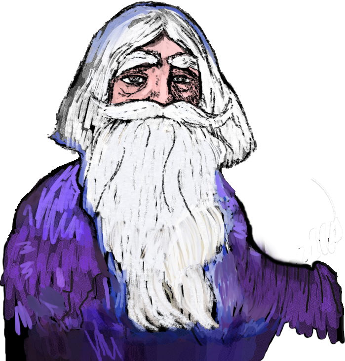
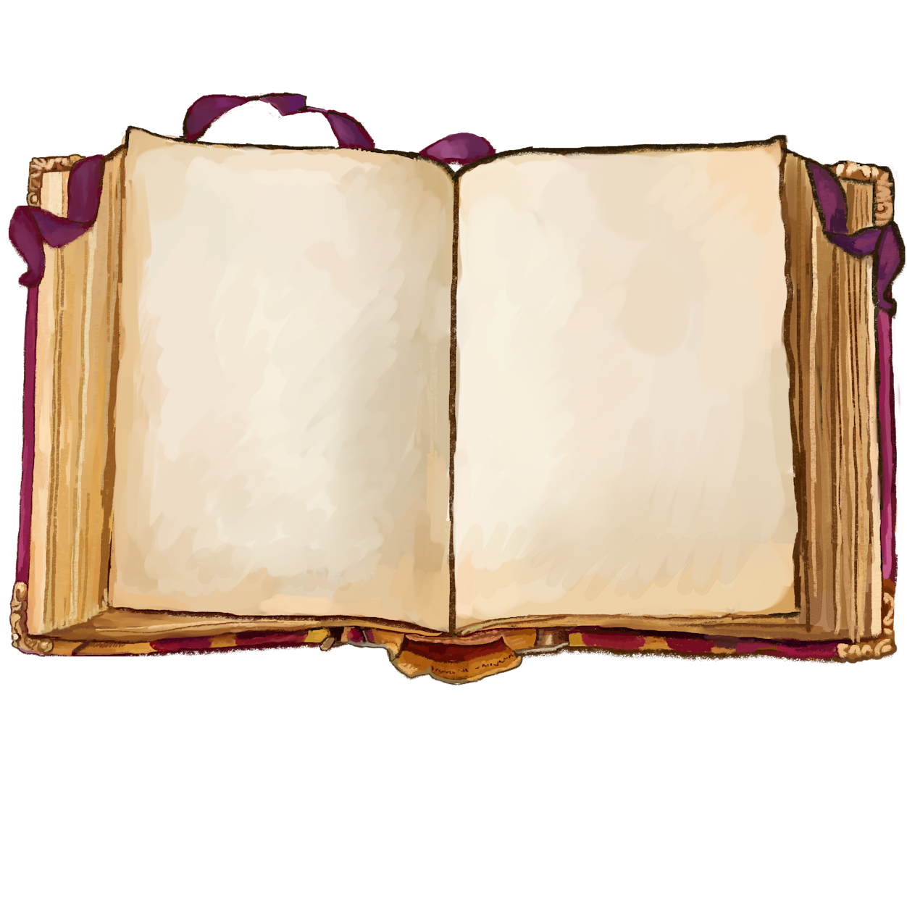

<!DOCTYPE html>
<html lang="en">
<head>
  <link href="https://db.onlinewebfonts.com/c/8fcba25cad7e455d9c900464ec6e7fe3?family=F1499+Alde+Manuce+Pro+Normal" rel="stylesheet">
  <meta charset="UTF-8" />
  <meta name="viewport" content="width=device-width, initial-scale=1.0" />
  <link rel="icon" type="image/x-icon" href="assets/img/favicon.ico">
  <title>Wizard's Shop</title>
  <style>
    
    html, body {
      height: 100%;
      margin: 0;
      padding: 0;
      background-color: black; 
      font-size: 1.4em;
    }
    body {
      font-family: "F1499 Alde Manuce Pro Normal";
      display: flex;
      justify-content: center;
      align-items: center;
      margin: 0;
      overflow: hidden;
      position: relative;
    }
 @media only screen and (max-width: 600px) {
      body {
          font-size: 16px; /* Smaller font for mobile */
      }
    }
    .square-container {
      position: relative;
      width: 100vmin;   /* vmin is the smaller of viewport width and height */
      height: 100vmin;
      background-color: white; 
      /* Optional: add a border or box-shadow for clarity */
      box-shadow: 0 0 10px rgba(0,0,0,0.5);
    }
    /* Background layer */
    .background {
      position: absolute;
      top: 0;
      left: 0;
      width: 100%;
      height: 100%;
      background-image: url('assets/img/background.png');
      background-size: cover;
      z-index: 1;
    }
    .crystalbackground {
      position: absolute;
      top: 0;
      left: 0;
      width: 100%;
      height: 100%;
      background-image: url('assets/img/bg_ball.png');
      background-size: cover;
      z-index: 1;
    }
/* Wizard container layer */
.wizard-container {
  position: relative;
  top: 15%;
  left: 51%;
  transform: translate(-50%, -25%);
  z-index: 2;
  width: 50%; 
  max-width: 100%; 
  /* You can optionally constrain the overall container size if desired */
  /* width: 800px; or similar */
}


/* Remove the forced 100% rules from these classes */
.wizard-body, .wizard-hands, .crystal-ball {
  position: absolute;
  max-width: 110%;  /* You can keep this to prevent overflow if needed */
  /* Remove: width: 100%; height: 100%; */
}

/* Text Box Container: scales with the screen, anchored above the bottom */
.text-box {
  position: absolute;
  left: 5%;            /* 10% margin on left */
  width: 90%;           /* 80% of the viewport width */
  bottom: 10%;          /* Distance from the bottom (adjust as needed) */
  aspect-ratio: 4503 / 1290;   /* Adjust to your image’s intrinsic width/height ratio */
  /* If aspect-ratio isn’t supported in some browsers, you can add a fallback using a pseudo-element */
  z-index: 3;
}

/* The Background fills the entire text-box container */
.text-box-background {
  position: absolute;
  top: 0;
  left: 0;
  width: 100%;
  height: 100%;
  background-image: url('assets/img/text_mouse.png');
  background-size: 100% 100%;  /* Scales the image exactly to the container */
  background-repeat: no-repeat;
  pointer-events: none;        /* So that background doesn’t block any interactions */
}

/* Text Container: positioned inside the text box with a bit of padding that scales */
.text-container {
  position: absolute;
  /* Adjust these percentages to match the “printable” area inside your background image */
  top: 25%;
  left: 21%;
  width: 70%;
  height: 50%;
  overflow-y: auto;
  font-size: 1rem; /* Use rem or other relative units so the size scales if needed */
  color: #CA7231;
  padding: 0px;
  box-sizing: border-box;
  /* border: 2.5px solid #E7E7C6; */
  scrollbar-width: none; 
  -ms-overflow-style: none;
  }
  .text-container::-webkit-scrollbar {
    display: none; /* Hides scrollbar on Chrome/Safari */
  }


/* The options-bar now acts as an aspect-ratio container anchored at the very bottom */
.options-bar {
  position: absolute;
  bottom: 0;
  left: 0;
  width: 100%;
  /* Use the aspect-ratio property (supported in modern browsers) to calculate height
     For a 5000x1667 background, the container’s height will be ~33.34% of the viewport width */
  aspect-ratio: 5000 / 907;
  z-index: 4;
  /* (For browsers that don’t support aspect-ratio, see the "fallback" comment below.) */
}


/* The background image fills the container exactly */
.options-background {
  position: absolute;
  bottom: 0;
  left: 0;
  width: 100%;
  height: 100%;
  background-image: url('assets/img/toolbar_bg.png');
  background-size: 100% 100%;  /* Forces the image to scale exactly with the container */
  background-position: bottom;
  z-index: 4;
}

/* Instead of using flexbox (which might not yield pixel‑perfect, absolute positions), 
   we let each button be absolutely positioned relative to the container. */
.options-buttons {
  position: absolute;
  top: 0;
  left: 0;
  width: 100%;
  height: 100%;
  z-index: 5; /* ensure buttons are above the background */
}

/* Remove any fixed-size flex rules—and use absolute positioning for each button.
   Each button’s size and position is set in percentages so they all scale as the container scales. */
.button {
  position: absolute;
  background-size: contain;
  background-repeat: no-repeat;
  cursor: pointer;
  /* For example, if each button should be about 5% of the container's width: */
  width: 13%;
  aspect-ratio: 1 / 1; 
}

/* 
Example positions for each button – adjust these percentages to match the intended pixel‑perfect layout.
These positions are calculated relative to the container:
   - left: 0% is the left edge, and top: 0% is the top edge of the .options-bar.
*/

#option1 { left: 1%;  top: 42%; }
#option2 { left: 18%;  top: 42%; }
#option3 { left: 36%; top: 12%; width: 16%; }
#option4 { left: 54%; top: 40%; width: 12%;}
#option5 { left: 70%; top: 40%; }
#option6 { left: 86%; top: 15%; width: 16%;}

  </style>
</head>
<body>
</body>
  <script>
    const tales = [" \
    Tina the dragon was due for a bath, unquestionably. Ryan had been smelling the facts for a month now. The odours had begun as particularly perfid lasagna remnants, more specifically a pas de deux of parmiggiano romano and tomato sauce. Over the days and weeks it had transformed into something more complex, darker. Ryan had yet to smell that special maggot cheese his cousin Arnold, a gourmand, had so much spoken to him of, but he fancied Tina smelled something like it by now. \
    Why had he not yet told her of this? Why had he simply spent copious amounts of time on their jungly lawn, furiously breathing in the scent of hibiscus and pomegranate, ripe? Ryan cursed his cowardice, sipped at his morning blood stew, and thought of the pear pie to come tonight. Perhaps there would be octopus pancake, with light zesty garnish, for lunch. All of it would continue to be made by Tina,  continue being the reason he stayed. \
    Jenny the orangutan had not been a deficient cook, by any means, and sometimes Ryan thought about her again with a longing that had never infused their time apart when they were together. He had found her toothy grin too primitive, her luxurious tastes disturbing, her way of life too fast. In an instant she would have been like his mother, demanding too much of his time, spreading herself into every nook of his mind. \
    \
    "," \
    \"I can't be whimsical!\" croaked Guiliana the Frog bitterly. Her lace veil drifted as she spoke, billowing in the biting wind. No, certainly it was not the weather to be whimsical. But she was addressing her husband, Buttigieg Bat. \
    He blinked. His glasses were askew, a not-uncommon occurrence. He adjusted them with one claw, bit into a peach for comfort (he had conveniently hung himself right next to it for sleep) and decided that Guiliana's lament was not worth his time. There was still the matter of the spiders to be addressed. \
    Before the conversion ceremony in the Cave of Cavernals, Buttigieg had subsisted on insects rather than fruit. Thanks to the magic words (and feathers) of the Cautious Canary, however, he could now spite earwigs and the like to his heart's content. This filled his stomach, if not his heart, for while Buttigieg had lacked the agility to grow first-rate at hunting he could easily latch on to soft round balls. The problem was the delegate of the spiders who had come yesterday with a bribe. \
    \"We know you no longer eat of our kind,\" he had commenced cajolingly, \"O, Great One. And it is safe in this knowing that we come to you to seek help!\" \
    Protection from a young upstart bat was what they asked for. The nerve! Buttigieg to abandon the blood ties, the bond of intra-species loyalty, in return for the mere hint or whisper of a promise to guide him to the mythical Tree of Wonders? \
    \
    "," \
    Griviol was livid, as the clenching of his jaw clearly indicated to his terrified underlings. Menix, the newest hire, had not yet had the chance to mourn a relative in the wake of a Graviolian rampage. Nor were survivors so loose-lipped that Menix would find out  before his wife was eaten next year. Nevertheless, he could feel that something was in the air. He decided it was hayfever, and took an allergy pill. \
    Griviol finished dumping the contents of his suitcase onto the fine Persian carpet Metina, one of the longer-lived underlings, had obtained for him following the death of her famous cat. \"None of these cigars are pyramidal in shape,\" he revealed through gritted teeth (and as some of the boxes, in fact the majority of them, were pyramidal in shape this was indeed news to his onlookers. \"Shaïfa!\" \
    Shaïfa, a tall and astoundingly corpulent underling, opened his mouth in silent protest. This level of audacity in one who had seen three second cousins (one twice removed) gnashed to smithereens by Griviol was unheard of. It had the flavour of a miracle. Whispers sublity began to float about the room, rebellion to foment in unspoken argument. Then Shaïfa's fist opened to reveal a cigar rising in triangles, and the bubble of lightheartedness burst. \
    \
    "," \
Nobody remembered where the Map was anymore. The Camelopard began to scramble, filled with the awful pressentiment that its diamonds would get stolen in the confusion if it stayed overlong. Then it shrieked loudly: \"Out of my manse!\" \
Its partner the owl remained nonplussed, but the cat and donkey left at that, as did the rooster. A mouse came out from under an armchair, squinting toothily. \"Did I hear something?\" \
\"Vermin,\" the owl drawled. Swooped. The mouse, more dead than alive, was in its talons. Being eaten. Eventually it would be spat out as part of a pellet. (The owl ran a healthy side business selling pellets online to amateur artists, chiefly female, of morbid predilections. \
The camelopard breathed loudly. It was calmer now that it could see its diamonds properly, without any potential thieves loitering about! \
The diamonds were a family heirloom: a religious affair, as it happened. Great-grandfather Colligit had been part of a sect which communicated with the Great World Consciousness via diamond, and the more diamond was involved, the better communication went. If the disciple had little in the way of diamond pebble, he was told to get more, to strengthen his line of connection. Unfortunately, once his bag of diamond bits reached a substantial enough weight, World Consciousness merely said \"Good.\" \
\
"," \
\"Savoir-vivre,\" intoned the Baroness. \"Many in this institution appear to be woefully lacking.\" Her secretary, a timid-looking Italian (one could deduce his nationality from his habit of wearing loafers without socks) was jotting her words down furiously, anxious not to miss a thing. Yesterday he had missed the word \"maraschino,\" and Her Eminence* had veritably turned purple at the sight of the fresh cherry atop her crystal flute of rice pudding. The secretary, whose name was Franco, really wouldn't have minded the change of colour on its own, but the Baroness had followed it up with a disquisition on the merits of changing his employment situation. Franco had not liked that. \
* how does one address a Baroness? \
\
"," \
The strawberry was not yet ripe, or at least it did not yet emit the sweet, sun-drenched aroma Philibert expected from small red fruit. He paused. Best leave this for Faustine, his employer's younger lover. Her palate would not be developed enough to taste the lack; she would simply be in awe of the presence of a fresh berry. Young women were so easy to impress, particularly if you had achieved any sort of success in the field they themselves hoped to break into. \
Philibert himself had hoped to become a famous chef once. He remembered the excitement of those days, the sense that nearly any encounter could bring him closer to success. Every new connection somehow taught him something new about cooking, or self-promotion, or food - the food already out there. However had he ended up in Flaubert's employ? A series of disappointments, of small capitulations to fear, had led him - irreversibly, it seemed - into the position of personal butler in a well-appointed little château (any building larger than a shed seemed to develop this title lately). \
\
"," \
\"My mouth used to be beautiful,\" the Toucan croaked. She must have been referring to her beak, which had been a hack job at the painter's. Discolouration was not uncommon with age; appointments at the beak painter's were a hot ticket for toucans nearing the big twenty. But Mark the Hound, who was new in town, had really ruined old Martha-Toucan's decaying splendour of the mouth. He'd even gotten the colours wrong. \
\"He's a hack,\" her friend Donna agreed. Donna was a demon - retired since '09 of course, but she retained a  whiff of sulfur about her. It was her nature, and so although she was a food bank and soup kitchen volunteer of high enthusiasm nobody much enjoyed her contributions. Angels just did it better. (Thankfully they left the scent of butterscotch in their wake.) \
\
"," \
Whispers went, passed, floated. Takira opened her eyes. The ceiling was awash with pastel hues from a great multitude of glowing crystals. Takira shut her eyes, breathed, blinked again. Nothing had changed. \
She was in a wonderfully soft bed, wearing some silken outfit. She could still hear the whispers, but they did not seem to be coming from anywhere specific. Besides, surely they didn't matter. Her new surroundings were a mystery much more absorbing. It had been a long time since Takira had seen anything comparable in the world of Man. Back in Faerie, she had been accustomed to… yet, how could this be? And why were the whispers growing so insistent, so sussurating? \
\
"," \
Though the hour was late, the monkey was of good cheer. As per usual, it was plotting to rob its neighbour the Elephant's banana stash. Though the monkey was not entirely lacking in comestible supplies, you see, and lacked vision and excitement in its life. Consequently, it was very fond of instant gratification and petty crime alike, and mixing the two was for it the height of sweet oblivion. \
The Elephant never sought oblivion, perhaps to its detriment: it could still remember its escape from its mother's womb, and shudder with terror at the bloody thought. Fortunately, it had a predilection for vigorous activities which kept its blood flow from curdling around its hippocampus (for that is a part of the brain very important in memory retrieval, and the blood goes there just as you go to fragrant fruit trees to pluck sweet loot.) \
\
"," \
The waters were warm in Barbados, or so Petros had been told by the Turtle, she of the giant size and delicious meat. Not that he knew what she tasted like - that would have been horribly rude - but she had told him, in bits and pieces, about the various restaurants her relatives had been served in, the personal chefs commissioned to prepare their delicious bodies for the extensively well-born of Britain, the oil magnates of Araby, the robber barons of America. Petros hadn't understood what she was saying half the time, his understanding of life thus far remaining simpler, beyond the reach of colourful figures of foreign nationalities. Except for Her, of course; the Turtle from abroad. \
\
"," \
Nothing had been solved during the silversmiths' reunion; in fact, if Malcolm Bigpants' expression was anything to go by (and it was), Seldom H. Full's proposal continued to flail far from water. \
Nobody wanted to expand into ironwork. Morgan Dowdy expressed the sentiments of many when he snarled that he'd paid his dues in those forges, and silver was his life now. Paul Gladstone, who secretly wanted to graduate to gold filigree, had more mercenary motive, and consequently took on a highly conciliatory, flattering tone with all. Why not try mass-producing a couple of sturdy models in iron, he wheedled. It would benefit everybody. Unfortunately his speech had been sidelined by his very own poodle's innocent intestinal workings. (Paul liked to bring Macaron to work on meeting days. Attitudes toward this were, understandably, mixed.) The poop scooper, once out, much undermined the seriousness of the stakes. \
\
"," \
\"Darling,\" Allen Castor told his young wife, not at all cordially, \"how on Earth did you manage to forget flair?\"  \
Flora hung her head. You would have thought it was her favourite parakeet's funeral (although she owned twelve, of which four were very strong contenders for \"best,\" the distinction between Pinchin and his confrères was ultimately unavoidable.) But Pinchin was still alive - she had merely disappointed her important husband, her vastly wealthier and more important that herself husband yet again. Yet again, too, in a task which he had foisted upon her without considering her interests and aptitudes. (Flora, in high school, had been especially good at football.) \
\
"," \
Cuthbert's rags remained unscathed, a fact which unfortunately was of no relevance to the Red Pioneers' cause. Lirban's kaftan, however, had been sullied, to the great delight of - if not all - then many. \
Giovanni was about ready to weep openly. How many times had he watched these characters on TV while the call to adventure tugged at conscience and heartstrings? How much lifeblood had he poured in avoiding the call? In injury by the critical, he claimed he had been wounded; under support from the kindly, he collapsed like an overmixed soufflé. Real injury? nonsense. His pride had been bruised, perhaps. But the pride was unmerited. Never had he held steadfast. \
When did the dark times swoop down upon Giovanni? To some extent, the dark times had defined Giovanni for very long. As a child, he had been mostly waiting, and in this crouching position he had learned, enthralled, haphazardly. But now he was a very confused man, a mug of mulled wine spiced with resentment and discontent. A vague sense of having been cheated. Though he had been taught to be nice, this brought no contentment. It had been his birthright to bite. \
Cuthbert reminded Giovanni of himself. The wound was so apparent, the need to please ran so deep. Lirban, however, also felt like a reflection. The sullied glory… the outsiders gloating… And yet, perhaps this was honourable and right - a punishment just for a gambler of such disease. \
\
"," \
The oranges, to Maximilian's great contempt and raised eyebrow, all contained worms. He spat into the crate, engulfing one wriggling figure with this machination. Maximilian's spit being extremely acidic, that worm did not persist in living much longer.  \
Having vented his spleen, Maximilian returned to his office, leaving the worms to continue their feast. \
\"Tricia,\" he said wearily to his loyal secretary. In her fifties, with a slowly expanding paunch and garish taste in makeup, Trish (as her intimates called her) could easily have aroused the scorn of the younger girls in the office by mere virtue of her appearance. But, as it happened, they lived in fear of her disapproval. Her disapproval led to quiet words to Maximilian, and unpleasant consequences followed… Last month Cordelia had returned to work with ever-dwindling amounts of fingers. One day she stopped showing up at all. Maximilian, gently smiling, said she was on leave for a salt air cure. Nobody even pretended to be deceived; it was a deafening silence. \
\
"," \
Jocelyn the tiger yawned, her maw opening wide, her teeth gleaming almost benevolently. Dominic-dormouse stayed on his guard. This creature he had no reason to trust. Just last week, Jocelyn had stolen his jam! \
Dominic trembled with rage just to think about it. Jocelyn had proudly told him that she ate only meat - but that he, puny as he was, needn't worry - she devoured larger game, never stooping to rodents smaller than weasels. Having sensed the truth of this statement, though still uneasy, Dominic had told the tiger about his predilection for bread and jam. In spite of her fearsome build and cruel eyes, Jocelyn was an excellent listener. Cruel as those yellow pupils were, they glinted with interest when she asked you questions. What did bread taste like? How did it feel in your mouth? When had he started to make this jam - and what made it so sticky? And the fatal question: what was the best place to store it once it was ready? Dominic had answered this just as unthinkingly as he had all the rest, awash in pleasure at being listened to. In his cellar, of course. \
\
"," \
The peacock's feathers were far too short after that trim! As a matter of fact, it was disgraceful. Perry the panda had to do something about this mishap, pronto! \
Except he was tired. And his stomach was too full. \
Lena the lizard wasn't nearly as worried as her red-furred coworker, in spite of his contagious grimaces. She was absorbed in thought of yesterday's rendez-vous with Hayden the hedgehog. What a gentleman! On twelve of his spikes he had brought her elderberries - more than what she needed for this year's wine. Perhaps she could make a second, for once… The thought was unexpected; it would never have occurred to Lena before she met Hayden. But Hayden was fond of strong cheeses, strong flavors generally, and strong wines… and this, unlike Perry's frivolous anxieties, had managed to light on fire some dry timber in her soul. \
Bern the bear, the one responsible for the peacock's unfortunate appearance, would have appreciated a cask or two of elderberry wine at that moment - no question about it. He was mad at himself for the clumsy hacking, mad at Perry for his unsubtle warning glances - ugly, bulging-eyed expressions they were! - and mad at Lena for having been lost to reverie all morning, forcing him to pick up the slack. Peacock tails were her realm of expertise, not his! What with his size, he was better suited to mammoths! Yet, and it was true, he had been grateful, just minutes ago, for the challenge… \
\
"," \
Despair settled on the giraffe's shoulders like a pungent cheese, or rather like the aroma  \
\
"," \
The rabbit gave its paw to the turtle and said, Bite. The turtle was disgusted. Why do you do this? The rabbit let out a drunken belch and sauntered away. \
\
"," \
The owl wondered how Hermes was doing. Lately the owl had been many things, a bewildering multitude of porcupine, pig, anthopper*, seal and parakeet (Portuguese). While Hermes had remained himself. True, he was older than the owl. True, his advanced age made it necessary for him to juggle less balloons. But, reflected the owl, did it not know of many who had perished before they could begin to wither under Nature's breath? \
Jellig the indomitable jellyfish had been such. In spite of a lack of arms or pincers, it had done its very best to pioneer in the field of juggling. With tentacles. Jellig's best attempts, against its mother's wishes, grew ever more frenzied and chaotic; eventually it burst, having worked itself up to the unheard-of: self-electrocution. \
But  Hermes was not animal often enough nowadays to be troubled by varied wishes, matchless balloons. He had made friends in the Hall of Marbles… \
* The unholy union of exactly what it sounds like. \
\
"," \
The giraffe moaned and twisted its long neck into evidently painful positions. Now its head sprouted out of a lowercase B, now it ended an S. Jeremy sighed as he looked at his creation. It pained him to see Inch hurting himself. Perhaps animals weren't meant to be shrunk, after all. \
Centimeter the mammoth, Inch's predecessor, hadn't fared too well, either. Her fur had fallen out in stripes, she had grown listless, and within a fortnight she had dwindled away to a desiccating, fifty-millimeter-high corpse. But things would go better with Catulla, Jeremy reasoned as he poured himself a tumbler of Kraken rum (he had felt oddly drawn to nautical imagery of late). Definitely Catulla would be the cinch, the real proof-of-concept for Jeremy's Miniature MenaJerie. Her plumage was glossy, as was her mane. And, most importantly, she was the kind of animal that nobody since Bellerophon had gotten close to… \
\
"," \
Alvin's hat was too short for much investigation. Berettas, more voluminous, were frequently vehicles for the smuggling of tiramisus these days. Alvin had been flabbergasted when he first saw an article addressing the issue. He'd had a beretta himself, once. How was tiramisu so expensive that people were risking soiling their hats to get them over the border? \
The answer lay in the price of mascarpone. Dirt-cheap in neighbouring Manca, it had risen to exhorbitant value in Pisa, \
\
"," \
Valentina shook her silvery locks and stamped one velvet-shod foot. \"No!\", she cried, as angry as a gazelle on stampede. \"I will NOT have the crocodile over for tea!\" (By \"crocodile,\" she meant her cousin Richard, a notorious blackguard keen on addressing females as \"chickies\". He had acquired his nickname over the course of many surprise knee-and-ankle-bitings, for Richard was three.) \
Walter, the butler, would have sighed if expressing emotion was permissible. But he was mere furniture in the charmed life of little Valentina. \"Missus Valentina's presence is required for tea by the Duke and Duchess,\" he announced, placid as a saucer of cream. \
Valentina frowned. If the Duke and Duchess were involved, there was no way of wriggling out of the commitment. Her own parents were not one but two ranks lower - though her mother had once been a Marchioness, according to the mysterious whispers of her sole other cousin, Paul - and therefore would never even dream of making their betters cross. The same was not true of their daughter. It was a difficult situation. \
\"Daughter!\" the Earl of Boxham roared. His Countess was by his side, furiously fanning herself in between large gulps of suspicious-smelling tea. She hated confrontations, the poor thing, and there was simply nothing to be done when Valentina was in one of her moods. Only the Earl could handle her in those times! \
And, indeed, he was getting the paddle ready. Valentina blanched. It was a beautiful paddle, very ornate. Ivory. At various times Valentina had discerned carvings of mermaids, trolls and even a cat with a chain around its neck upon it. Generally, of course, she could feel but not see the paddle when it was in use. \
\
"," \
Ube, Jimothy thought mournfully. However was he to grow the perfect ube? \
In the first place, he couldn't understand why the Canadian Gardeners' Association had chosen this fruit for their annual growing competition. Selection had alwaus gone like clockworl: carrot - yes, banana - no. Potato - yes, pineapple - no. Corn - yes, passionfruit - out of the question! Go to Jamaica for it! (Whether passionfruit ever had grown in Jamaica, Jimothy still did not know.) And yet. This year, pumpkin out, the Philippines in. \
Jimothy only knew about ube because during the lean years he'd stopped by a Philippino grocery store each time he had an appointment with Dr. Weatherbord, the Jewish General Hospital being at an interesting intersection of immigrants and jewry. Or at least, so Jimothy figured, given the high density of definitely Indian people and shabby specialty stores serving various Asian nationals within walking distance of a synagogue and the Segall center. The Segall was chiefly sponsored by wealthy Jews, even he knew that. But, unlike the ube situation, Jimothy had regarded the diaspora of Côte-St-Catherine with complete neutrality. There were no stakes in it for him. There was merely the possibility of purchasing a mango lassi. \
Would next year be sweetpea - no, mango - yes? Jimothy shuddered. \
\
"," \
Garlin had a stern expression on his face. He was preparing a thundering diatribe on the degeneracy and evils of society. This type of behaviour being not uncommon in banished angels, Ligar discreetly rifled in his briefcase for an earbug. He was gently tired of banished angels at this time and would rather listen to Beethoven. Soon enough the proboscis had inserted itself into Ligar's left ear and the thundering strains of some-piece-or-other delivered themselves into his brain. The injection which made earbugs capable of this marvel dramatically reduced their lifespan, and banished them forever both from the skies and from the ranks of the beauteous wingèd, but Ligar had never doubted the injections' worth. \
Solegred, another participant of the scarcely-populated parents' meeting, was very much against the use and generation of earbugs. She had clocked Ligar's subtle operations, and the rage that had filled her immediately at the sight was frankly more effective at drowning out Garlin's rant than any insect, for while Ligar had still words about lasciviousness and promotion in public forums coming in through one ear, Solegred could think only of schemes to liberate the earbug, preferably while causing physical damage to its user's ear. She claimed to be against violence to all living beings, but such pieties she was far from extending to the Malefactors perpetually committing their wicked crimes. Yesterday she had kicked a dog beater with great relish. \
\
"," \
What is the needful today, wondered Bell A. Rousse, cosmopolite extraordinaire, native of the world, polyglot over the tablecloth as long as you never ventured beyond dining-room topics. In short, an eccentric and a gourmand. \
Time was ticking for him on this Thursday. He was to produce a soufflé for his current wife, Walnut; moreover, it was to be flavoured with almond extract. Surely her nut fixation could have remained pinned to her namesake, carrot cake being so much easier…! But, just as there is no rest for the wicked, there is endless repose and languid daydreaming for their favored pets, and so Smyet-Ana the cat was licking herself delicately in preparation for another beautiful day.  \
Walnut, meanwhile, was out in the garden. The setting sun's rays struck her with such fervour, particularly upon her uncovered head, that she developed what used to be called a Vision. As far as Walnut could tell, a carrot-headed maiden clothed in the finest liquid amber had exited a sunray to float before her and say \
		LEAVE, O WALNUT, LEAVE! \
MAKE NOT YOUR SISTERS GRIEVE! \
		FOR ONCE YOU WERE A MAIDEN FAIR \
		YET NOW A YEAR OF BURDEN BARE \
		HAS STRIPPED YOU OF YOUR SONG AND SCALE. \
		YOU TREAD NOT WATER, NO, BUT ALE! \
		HAVE YOU TIRED YET OF WEEPING? \
		RUN WHILST HUSBAND, CHILD ARE  \
						SLEEPING! \
\"But Bell is making almond soufflé,\" answered Walnut in a small voice. \
And in a smaller voice yet: \"I'm scared that it will ruin the child.\" \
Once again for Walnut the voice intoned. \
		WORRY NOT, O WORRY-WART: \
		FULL OF YOUR MOTHER'S POISON-DART. \
		HAVE YOU FORGOTTEN ALL YOUR ART  \
			OF LIVING? \
		STAY, AND THE POISON YOU ARE GIVING \
		WILL RID THE CHILD OF JOY-BELLS' RINGING \
		AND WILL CONDEMN YOU BOTH ETERNALLY. \
These words having been cast, the angel fluttered away. \
\
"," \
The night was not so warm that the octopus could refrain from becoming a block of ice. It was against expectation, however, that it should sprout antlers as it did. The antlers were followed by a terrible cracking; the glass top of the octopus' head was rupturing, allowing a small stag to escape the confines of the frozen mollusk's body. The stag surveyed the snowy expanse tranquilly, if not quite placidly: its dark eyes were alert, you could feel it. Was it waiting for something? wondered the lone parrot conspicuously perched atop a bare birch. \
This parrot was warmer than you would expect due to the lovely thermal glass cage installed atop that bare birch. His name was Petros, in honor of that well-known saint, for his mother - who had perished that December in a carnival accident, may her soul rest eternally - had been as devout a bird as can be in Trinidad or Bogota. \
\
"," \
\"Unquestionably this black needs a quantity of red added to it,\" said the friendly magician. He said this to no-one in particular, but both the Magpie and the Nightingale lingering in a nearby bush tittered and flew off. The magician, looking less kindly, frowned. But that did nothing to dim his kindliness in the eyes of his young model and protégée of sorts. She had a father who barely said anything at all outside of his work, which had something to do with networks and trains and drawing contests at Christmas for the children of employees, and so she always felt a profound gratitude to older men who exhibited generosity of spirit in her presence without crossing a certain physical barrier. This barrier was a colourful cage made out of Plexiglass, because the girl had failed to acquire sufficient funds for the cage to be made of the more solid and timeless stained glass. \
The magician picked up his brush again. Most of his spells were cast in this way, via wet paint. He would have been barely distinguishable from an aging painter were it not for his official guild robes, with the mandatory ten spools' worth of crimson-gold thread, and his canvas. Of course the magic would never carry if the canvas wasn't made of flayed skin and bone. \
While some loud voices had briefly made themselves heard in protest, chiefly by sullying the Wizard's Fountain with feces and urine, this custom originated in 1407 by the maverick sorcerer Tadrick quickly became tradition. The skins of leopard previously used had simply become too expensive, in 1403, with the edict on imports issued by King Megadino. \
\
"," \
\"You might still catch a second wind,\" said the monkey teasingly to the flying squirrel, which really hadn't flown for an awfully long time, in squirrel years. Such an eternity it seemed, in fact, that the squirrel was not in the least amused, and it would have given the monkey a very wicked glare indeed were it not too well-born for such barbarities. Or could it grant itself license, just this once? No, too uncouth, it decided. Anything was better than being uncouth, old, or tawdry (the squirrel was determined to die young, so that when his corpse was examined its fur would still have lustre.) \
Regardless. The winged squirrel set fort in a sprint, jumped. Briefly it was gliding again, a marvelous feeling bursting in its chest. Then something went wrong - a wing seizing up - unnatural - sabotage! One final image floated in front of its dying eyes - of a smiling monkey proffering a bright, bright berry… \
When the soft, paralyzed body hit the ground, the monkey was jubilant. \
\
"," \
The gnome was quite dissatisfied with the prospect from the treetops. It was not sufficient for a government official of his superior rank. Why, even the birds seemed to think so, twittering gaily to his very nose. The cheek! Wishing to give vent to his sentiments, Raphdel (for that was his name) squished a tomato. \
I must seize this moment to explain something to you. While Raphdel's action would be considered near criminal in kingdoms such as mine, wherein the cost of a bushed of tomatoes has risen to a pear of diamond, growing tomatoes is the particular specialty of gnomes. Therefore to them one fruit less or one fruit more is of no consequence. They are practically drowning in them year round. A dwarf would sooner leave his treetop naked than without, upon his personage, a tomato or two. (Raphdel's squished tomato was one of two.) \
Feeling much better, especially after having slurped up his fruit and fastidiously wiped face and fingers, Raphdel climbed down his tree. Which really was his tree, you know. When the venerable Amelia Leafborne, his mother, had learned she was to bear a son, she and her husband had found a nice plot of land exactly two villages away, as was customary, in order to plant the tree that would be his abode upon maturity. For gnomes and trees both grow very slowly, a commonality which permits this remarkable symbiosis. \
\
"," \
Natalie could not quite place the green-eyed newcomers, although the odd question about \"poires aux gastrique\" rang a bell. They looked almost human, with long necks and knuckles dragging elegantly on the salt-stained floor. (The salt stains having come from a party of seven octopi that morning, which Natalie's coworker, Steve, had been unable to remove despite much scrubbing.) \
\
"," \
Water dripped from the sofa onto Landon's head. This was unfortunate, but could not be helped, as Landon was a small mouse and the very large sofa had been bolted on the ceiling above him. Furthermore, Landon, being temporarily incapacitated by a sneaky injection of mescaline, could not move out of the wet sofa's shadow. Or rather, he could, but he was afraid. For the subtle substance had begun to insinuate falsehoods to him. It so happened that the floor had metamorphosed into a concentric array of rings of fire - for Landon; that the stars had become visible, the ceiling having faded away and, apparently, the day-time sky, too. A heinous Manticore, moreover, armed with a scorpion's sting and many cracked pustules upon its skin of Man, impervious to fear and fire, was advancing towards the poor drenched mouse (for the sofa was wet in reality, its position in the ceiling having come about by a foolish renter's attempt to block leakage from the top floor. Do excuse the renter - he had the skills, he had the time, having recently been fired.) \
\
"," \
\"Some black-hearted individuals,\" the guard began to intone, \"some vermin and scoundrels-\" and here he paused for effect, but the whole impact of his creation was already, I am sorry to say, short-charged by the exceedingly grating nasal quality of his voice. \
\"Yes?\", Lord Penderlain asked quietly. This very quietness formed an undercurrent of menace which the guard really should have understood. Such comprehension would have allowed him to extend his allotted lifespan significantly. But he had always been hopeless in the subtler arts of intonation and manner, in spite of having three older sisters. Truth be told, it came down to his not being very bright. \
\"My Lord,\" the guard exclaimed, \"thieves have taken down the portrait of the Lady Enbrankd!\" \
Lord Penderlain let out a hiss. It was barely audible. \"What do I have guards for?\" \
The guard didn't understand the point of this question. \"Begging your pardon, my Lord, but what are we to do about the portrait?\" \
Penderlain did not seem to have heard the guard, which said guard found surprising, as the man was notorious for his excellent hearing faculties amongst his employees. This reputation had chiefly developed because of a series of intrusions on increasingly discreet card games. Somehow the lord had managed to glide up upon his staff gambling so often that nobody dared pull out a deck any longer. \
\
"," \
The mode of conversation was undeniably antiquated - whoever still spoke to one another through mist or fog? And yet Phletis did so, without the slightest regret. It was by far the most sophisticated method of communication he knew: how else could one convey and colour, and smell, and words? \
\"Showing up at one's house is perfectly sufficient for that,\" snidely remarked Beryl, Phletis' Thinking-Cap. As you well know, Thinking-Caps are privy to every thought of yours as long as they remain upon your head. They can eavesdrop on your innermost questionings even from a precarious perch or rakish angle. And, perhaps because they themselves are unable to do much nestled in your hair (or, as the case might be, protecting your bald pate from the cold), Thinking-Caps are generally busy-bodies, and rude. \
Beryl was certainly no exception to this rule. But Phletis did not mind. His mother, bless her soul, had been much the same. \"It is more refined this way,\" he said mildly. \"I am certain Galatea will be pleased.\" As he said this he added two drops of almond extract to the bowl of water he had placed by his side. The bowl, being of fluted crystal, was the ideal spellcasting medium. As a matter of fact, it was one of Phletis' proudest possessions. Phletis was always very pleased with himself when he acquired beautiful objects, and arcane items in particular, for a bargain. And this bowl he had practically stolen from a roadside goblin who had barely seemed to  understand what he was holding, so inebriated was he. \
\
"," \
The porcupine appeared to have taken ill not long before its disappearance. A thermometer lay on its bedside table, as did many an allegedly medicinal cordial. Oh, how lax the regulations had grown! Every woodtroll and his uncle sold the panacea for all earthy ills nowadays; why, you almost had to give the doctor a stern glare and pinch if she dared claim she needed more information before determining the appropriate treatment. Certainly the porcupine had been hopeful in the face of various fraudulent draughts, and who could blame it? \
Once upon a time the porcupine had needed a suit very badly, for a sweaty childhood friend of his had decided to undergo a de-sweatment procedure and in the process had miraculously been introduced to Cindy, his soon-to-be wife. I say miraculously because, when fellows in white suits are operating on your sweat glands, it is a miracle to see a pretty lady appear bearing hospital lunch. \
Particularly if the lunch involves tomato. \
\
"," \
\"I didn't expect to see you here,\" the Genie said mildly. He looked as inoffensive and innocuous as a nine-foot-tall levitating, semi-transparent purple being ever could. King Layabout continued to eye him with suspicion nevertheless, and frankly I don't blame him. \"How would you have known of me in the first place?\", the young king queried. This purple creature was extremely unsettling, especially because he could tell it was being dishonest, but he did not know how. Sometimes young women have this sensation of speaking to a spider, when they are being flattered by a man with darker motives. But that is neither here nor there. \
The genie drew a flower of large red trumpet from behind his left ear and began idly to twirl it about. The idle manner was belied by his skillful manoeuvring - his expertise was no coincidence. \"In our ethereal realm we are privy more than you would think to the tales of men,\" the genie remarked. Layabout heard the truthfulness of this statement and prodded no further. \
\
"," \
The dragonflies made a gentle salute in farewell. Lavinia was amazed by the graceful gesture of these insects. Her bet, however, remained on the beetles. As rare as it was for the shiny ovals to get riled up to anywhere near a competitive level, today was evidently an exceptional occasion. The royal anniversary likely had something to do with it: the Queen of Scaraby would fête her jubilee a fortnight longer still, but a win on the exact anniversary would be so wonderfully symbolic, and surely allow the team access to better funding with Her Majesty's blessing. \
Lavinia's speculations were not shared by her cousin, Steve. He was simply attending the figure flight tournament for star-crossed love reasons. It was known that Victoria, the beauteous daughter of Sir Winning Bug, had been attending the tournaments regularly of late - forced, rumor had it, by her father after a slow but steady dip in sales. Sir Bug was nothing if not an adaptable man, and any amount of daughters of his he would willingly have buried underground could it have assured his place at the top of the figure flying business. The uncertainty of it all could really eat a man alive, and so Sir Bug avoided stress like he avoided crocodiles. \
\
"," \
\"It looks hilarious, if that was the intention,\" the Chaplain began. Having once been a man of Science, he could engage with the mode of levity more easily that those of his brothers who had always been of the Faith. He frowned now. \"But the time each of us has been granted by Our Lord is precious, and we must be sure not to waste these grains of sand on the illusory or superfluous,\" he added. Then a little girl entered the refectory, and all were discombobulated. All the men of the cloth were aflutter with apprehension, that is; the woman embroidered on the altar-piece, doubtless a Madonna, remained implacable. \
The little girl was sallow-faced but of good cheer, not unlike her ribbed turtle-neck of mustard yellow. \"This game seems very nice,\" said she to the mum onlookers. \"But I don't know the rules of it.\" Looking around, she decided to settle upon the ornate chair in front of the altar, one replete with ebony angels and little men bearing unusual pitchforks. \"Are you waiting for the Queen to join you? This is a great throne you've got here!\" \
Brother John, who had slightly more experience with such scenes from the time he had spent praying for a family of fourteen, mildly asked the little girl where she came from. \"I came from Grandmother's today,\" she answered mischievously. \"We were at the library, and then she went to the grocery store to get supper before the fireworks, but she was being so boring!\" \
Here she paused and looked ingratiatingly at Brother John, who was not at the time disposed to be merciful. \"Your grandmother \
\
"," \
The Tickler of Navarre's growth had to be stopped. It was the epitome of an invasive breed. A once jolly name on citizens' lips had become a thrice cursed oddity, menace - even bane, to such as the Widow Gaskill. (You could tell with one look at that solemn matron swathed in black velvet that tickles had long been relegated to the catalogue of sins.) \
The whole hasty series of developments had much puzzled Jane and Kitt, those of Mr. Olyphant's brood old enough to comprehend tickling. Baby, as they still generally called the infant Brian, could still barely be touched by anybody other than their poor tired Mama, let alone tickled. But, boring Baby notwithstanding, what had happened since Daddy brought the Tickler back from France could never even have been dreamed of by either. \
And, since Kitt's Grade five teacher kept adorning his writing assignments with cheery remarks such as \"Very creative!,\" this was saying a great deal. \
\
"," \
\"Too many nitwits here, scowled Jean Ferrars, \"and not enough experts.\" That he considered himself an unimpeachable authority was clear both from his tone and the way he held his head. He'd  have been quite amiss in the Ferrars family without its characteristic contempt for the unseemly and poor. \
But such a position was not disagreeable even to Brenda Song, deep down, head of the Socialist Tea Caddy Society thought she was. She would never have proclaimed herself one of Socialism's adoptees were it not for the fantasy that all believers in fair government were as darling and uncontroversial as she. As a matter of fact, she would have had the shock of her life to be spoken to of Socialism over anything other than tea. \
Lunar Solace, for his part, was sickened by Ferrars' little gestures of superiority, and only partly because of pretty Ms. Song's evident affinity for the man. Having been raised on a steady diet of Yeats by an imprudent father, he had come to Yorkshire with certain notions of grandeur and chivalry of which he was now thoroughly being disabused. Poor Lunar was quite determined to seek relief that night in his private diary, known as Combat Journal. It was an odd habit, to be sure, this diary-writing under so confrontational a name. But most people who had been in the army knew what he was about. Killing left one with a broken soul. \
\
"," \
\"It's quite simple, Mimsy!\" said Trenton nonchalantly as he chewed on another of the cherries. \"Just think of it as requiring the Mother-in-Law Hat. What kind of hat do you think she would approve of?\" \
Mimsy narrowed her eyes at Trenton in an expression none too kind. Mimsy had been an expert at death glares, not too long ago, though she was now retired. Her rage, however, remained, and she could not help delivering some of the old feeling in her malevolent squint. \
Trenton spat the pit out into the darkness, whooping when a thud was heard in the area of the trash can. \"I knew I could do it!\", he exclaimed gleefully. Then he turned back to Mimsy. \
\"You can give me as many sulky glares as you like, just remember the frown lines it could give you. Now, where was I. The Mother-in-Law Hat. She's a very righteous soul, yes? Adamant that the young, poor and disenfranchised be supported? Seems to have neglected her physique for some time? And, crucially, acts like the sun falls and rises with her son…\" Trenton pushed the cherry bowl away dramatically, swivelled in his chair, decided to propel himself forward. He shot forward like an arrow, thwarted in his grand sweep only by the squat solemn guardsman of the trash. He frowned at this disturbing element. \"They should design waste bins that disappear when you don't need them.\" \
\
"," \
\"Where do you go when you can no long sing?\", asked the Blue Fairy. Selena frowned. \"I go to the fridge, ma'am.\" \
This was not strictly true. At time she had even gone to the dumpster. But already the Blue Fairy was releasing, to Selena's great surprise, a flood of tears and sighs. \"Oh, poor girl!\", she wailed. Even her wings seemed to be growing misty. \
Selena, not knowing what to do in this situation, decided to gnaw at her fingernails some more. They were already in very poor condition, and at least what little remained came to her free of cost. The baby turkeys she had gorged on last night, courtesy of Farmer Tom, had come at a price she was no longer willing to pay. But this was irrelevant; the horrid wailing had to stop. Selena took her courage with both hands and attempted to slap the fairy out of it. \
To her surprise, the fairy began instead, and rather hysterically, to laugh. \"I was only feeling your pain,\" she choked out between ringing peals, \"you carry so much around!\" And then the mirth faded, and so did the handprint upon her forehead. Quite rapidly there was no trace of her left in the room at all. Confused, Selena sat down and sighed. \
\
"," \
\"He needs a different haircut,\" chuckled the chimp. Indeed, the parakeet's finest hour in fashion was either far ahead or far behind. The parakeet, whose name was Tim, sighed and put his wings over his head from shame. \
But enough of the animal hair salon. What was going on at the chimps-only movie theater on Tuesday afternoon? Let's have a peek in the janitor's closet there first, if you don't mind. For in this damp enclosure one chimp was plotting his revenge… \
\
"," \
The wizened old mage adjusted his crushed velvet pointed hat without a change to the supercilious air which had thus far been his most enduring accessory. The snakeskin boots had lasted one decade, but then the loud animal-lovers had pranced about half-naked claiming that fur and leather were not the way to live. Having enjoyed the sight of said scantily-clad protests, the mage was surprised to find he hadn't the heart to keep wearing snakeskin. \
Then there had been his bat-wing headgear. This was long enough after any kind of popular activism for him to feel comfortable wearing dead animals again; and besides, the bat-headgear had been a gift from his friend Tim, a warlock on whose insistence the mage would have been ready even to jump into a boiling cauldron. The headgear, alas, being bound by magic to its creator, went up in flames on its sesquicentennial - a year in which Tim fought a phoenix at a great disadvantage, and died charred rather than singed. \
\
"," \
Matthias had the ball, and therefore held the key to the riddle. In this he was fortunate. Livia, having rescinded her access to the very same, was in an extremely tricky situation. To her great credit, she did not know it. \
This ignorance was to her benefit because of her congenital good fortune. Knowledge would merely have poisoned the apple of her round good cheer. \
But Matthias had the ball, and he had visited Porthello the mage to unlock its secret. Now the moment he had half-feared, half longed-for could no longer be kept at bay, lest the magicks be corrupted. Matthias  rubbed his palms against one another and began to chant the spell - \
\"Master!\" A page had just burst in through the laboratory doors, sweating like a pig. Matthias, who at the best of times was something of a neat freak, found himself utterly unable to dissemble his contempt, asking what the matter was through gritted teeth. \
\"We're out of ice cream!\", the page wailed. This was dread news indeed, for the crocodiles in the castle moat, whose protection of Matthias had proved invaluable over the past decades, could eat nothing else without developing severe indigestion. And everybody in the castle respected Matthias' motto: \"Always Be Prepared.\" (They had to, because whatever went wrong he would be sure to inflict doubly upon yourself. Nobody wished to repeat the honorably retired Chamberlain Lucius' Great Indigestion of '87.) \
Matthias scoffed. \"I'll see to it that there's an express delivery,\" he drawled. \
\
"," \
The men were all in gold, except for one bearded oddball in a silver ballgown. Joanna did not bother to try to close her mouth, nor in any subtler way to dissemble her astonishment. The befrocked one caught her eye and winked.  \
\"Lady, we need your aid,\" spoke a man bearing a bronze trident. He smelled of the sea and bore uncut emeralds in his many ear piercings. (Joanna knew they were uncut emeralds because she had seen some at an exhibition on ancient Colombian cultures.) This speaker gave Joanna a piercing look, and the girl blushed, feeling for all the world like she had done wrong, and didn't Mr. Trident know it. \
\"But how on earth could I help you? I'm just a girl!\", exclaimed Joanna. Evidently the man with a long scroll to unroll had been prepared to address any concerns that could arise on her part. \
\"Well, as a matter of fact… Johnna, with every adherence to tenets of Sufism, you cloud our path.\" (At this he looked up from the scroll and frowned.) \"What is Sufism?\" \
 \
"," \
King Layabout scratched his head. The news from the parakeet had been quite disconcerting. Famine amongst the hedgehogs? Fights amidst the finches? General sadness, misery and woe? He wished he could ask the Thinking Cap what to do, but he really had no idea where she might have gone. \
Well, if he was to rule in his parents' absence he must start solving problems right away! Layabout jumped off the red swing and hurried about the playground, packing some of the necessaries for an adventure in his red kerchief: blocks of cheese, a spyglass, his cutlass (won in a bet against the Fred Pirate Morgan)… Layabout vaguely considered the importance of fruit and vegetable in a man's diet, then decided he would serve himself as he encountered victuals on the road. \
Ultimately he was delaying the inevitable, he realized as he plucked at his banjo. What was he to do? And in a sudden flash, he remembered his nurse's tales of the great Djinn of Alfombra… \
 \
"," \
She had always spoken of them in hushed tones.  \
Old Nadira would begin each time by speaking of the desert… \
\"Now, this here sandbox, it's OK for a prince to play in, it's safe, not too hot. The Alfombra stretches out for miles and miles. Men have died trying to cross it - fools! As if the sands would allow it. They wouldn't, you know - every grain of mice is opposed to it. For they serve the will of the Djinn…\" \
Layabout was always enthralled by the part that came next. \
 \
"," \
\"The moon is too bright,\" muttered Remigius. And indeed it was too luminous, too orb-like: its glow far exceeded the paucity required for casting a Bane of Moonshine curse. \
Yet how Remigius craved to cast such wicked magics upon his rival, young Thomas the Ancillary Astronomer! What a fitting revenge, pertaining to the heavens as it did, but above all what glorious destruction it would have wrought…! \
For, above all, Remigius envied Thomas his ease; the lightness of heart with which he consulted charts, peered through his telescope, disclosed predictions and various other actions of the sort pertaining to his métier. For Remigius, spells had never come easily: he'd rather expected to become a chef than a magician (and a court one, at that). But alas! one day his pretzel-dough pizza did not earn the distinction he'd been sure it would merit at the County Fair. Remigius did not blame his lack of advertising for the inadequacy of bums to fill seats, though he should have accorded himself that small generosity. \
 \
"," \
The kabbat stretched its cheeks out into an uneasy expression, the teeth in too horizontal a line and too exposed to be mistaken for a smile. Understandable. It was worried about the excess of goda leaves. \
The Men here came hunting for goda leaves every so often, bringing large clear bottles that made harmonious sounds when the Men struck them. And the men did this joyous hitting when their bottles were full of the dark leaves, green as Krigga frogs. It took a man about one change of the breeze clambering about the lush canopy to fill his bottle, and usually they came in two pairs, the taller group staying lower and the shorter Men going higher for reasons the kabbat did not fathom. \
But this year, the goda trees had been laden as never before with the fragrant leaves. And the Men had chosen to come in greater numbers, and eventually bearing jars not bottles, cloudy squat giants that made no melodious chimes when struck together, but a loud clang. Yet it was not the clang that bothered the kabbat so much as the behaviour of the Men who stayed behind. \
One or two always would, now. If two they were never from the same group, of course, and they went about their queer business as if they could neither see nor hear the other. Perhaps such was the case. For the Men stayed behind only if they had sneaked a chew of the leaves. \
 \
"," \
Elle cherchait. Beaucoup cherchent. \
Elle cherchait un désir, un souhait, une réponse. Un sourire approbateur. Un bouclier pour sa quête. Car il y avait une quête, à moitié oubliée. \
Mais elle se méfiait de la magie. Force universelle guidante, bienveillante? Ces étranges coïncidences ardemment souhaitées ne pouvaient être méritées. Tentations mises en chemin par le Diable? Elle ne savait pas; peut-être ne voulait pas savoir; elle était si confuse. C'était un dernier jour chaud d'août, et elle manquait de réponses. \
 \
"," \
The Queen of Berring raised her brow. Sifja, her astronomer, had just given her a most unfavourable reading of Jupiter's influence on her planned war campaign. \
It was past time for hints. Sifja was a hard worker, tirelessly poring over his charts and performing calculations. But such meticulousness and, to put it bluntly, honesty did not contribute to the morale of Her Majesty's soldiers. He had been right about Venus and blindness at a crucial moment; when her men had been facing Scythians at Corinth a stampede of antelopes had worked up enough dust to panic her men, reminding them of fish-eyed Sifja's prophecy. \
\"Sifja,\" the Queen began in honeyed tones. \"Is there any way the clouding of Jupiter could be seen as dangerous for my enemies?\" \
\"No, Your Majesty,\" wheezed Sifja. The Royal Astronomer was commonly known to be a great wheezer. People assumed it was all the dust from his charts saluting him from his throat. \
It was because she was still smiling that the raised eyebrow journeying further above her left eye looked particularly menacing. \"Sifja, there is certainly one for my Royal Astronomer.\"  \
Unfortunately, Sifja did not grasp her meaning. He merely wondered whether the clouding of Jupiter might disturb the functioning of expression muscles in females. Her Majesty's left eyebrow was doing something very peculiar… \
 \
"," \
It was the end. The Bat shuddered. There was nothing left to do; the poison had taken its effect. The Bat was losing feeling in its tendons… \
Who had done it? The Bad had smelled something wrong on the mango, guessed more or less the impact of that fateful bite… Yet, he had gone through with it. Why? \
An odd sound came from the east. The Bat shuddered… it was too weak now to go lurking about, spying on mysterious strangers. One of its favourite pastimes, before… too late, why? \
 \
"," \
Once upon a time many Men had lived there. Now it welcomed grape vines in the same numbers. Speech had not been heard in the vast stone corridors for millennia. \
Zarsuk was the last Man to have mattered. It was his foolhardy will which sent the decline of that stone city, Xorthax, into motion. Glum at the mere prospect of gazing upon stars, he had decided to devote all Xorthax's resources to building that which would catapult him directly amidst the celestial orbs. \
He left the usual amount for his own welfare and upkeep, of course. A prince need not question whether his expenses are superfluous; worries do not well feed superciliousness. But Zarsuk's military was suddenly free of payment and task alike. (Every member who was not an engineer, that is). Consequently worry grew among the women and girls of the city. Especially Glihana. \
Glihana's adeptness as an orator had cost her many friends, but it was also what had kept her alive through many episodes of (well-merited) guilt, despair, anguish. \
 \
"," \
Dancing through the grove - dancing her way through the Twilig Grove, that is - Illiena was surprised at how light her heart felt. Lightning-bugs flashed their jaunty messages mere inches away as she giggled with the surge of relief. At this time she was not beholden to anyone: not snagged on foreign mistakes and griefs, not confused by anybody's hidden agenda… She could be bold, brash - even naked! Smiling as the thought occurred to her, she pulled her fox-fur cloak closer. The first real winter snows had fallen this week. Really, Illiena suddenly thought, there must be dragon's blood coursing through those little fireflies! How was it that through autumn and even now they had stayed awake? \
 \
"," \
The flower was large and fragrant; its petals, open. Sammawi would not have specified that the petals were open had the flower itself not been so unexpectedly crisp. His lieutenants had to be in on the crime, too; Sammawi's pleasure at hearing the more resonant of his underlings' prayers was much greater for prayers of thanks than for prayers of offering. The Sammawis were quick with rice and slow with everything else, including much-desired silence. \
Today Sammawi's grains had certainly turned out perfect. He wished the road home would be undertaken in silence, but that was not to be. His crafty wife kept tugging at his dark sidelock, demanding his attention for every little sight, quick to utter the little cries of praise he was meant to expand into thanksgiving prayers. But Sammawi wanted to add solitude and premium soy sauce - not his wife's foreign lolling - to the rice ceremony. \
 \
"," \
\"The truth is out,\" whispered Semiramis. The gauze bandaging her once-beautiful face fluttered as she shook her head insistently, gripped by some private sorrow. Alfiq, her physician, wondered whether he had used too little of the moth's wing ointment on Her Majesty's skin. But he wondered idly. As it happened, he knew he had been in a state of complete distraction as he tended to Semiramis' burns last night. Even now the thought that Dahlia's parents had agreed to their marriage brought joy to his mind. \
 \
"," \
The gangrene was spreading. Milo shook his head sadly. There was little that could be done by this point. Relatives could be patted on the back, gently, or some such meaningless trifle. But the gangrene meant death. It was a shame for Old Sailor Time's reputation, but they would pull through somehow. Unlike Joe. \
Milo left the room after telling his secretary how enquiries should be handled for the next couple of hours. Milo hated this mugginess, hated how scared he felt when an eerie sound erupted out of nowhere. Until it disappeared some thirty seconds later, he was deeply ill at ease, suddenly concerned that the sculpture of the Queen of Benin which ornamented his waiting-room contained some entrapped soul. He thought tiredly of his wife, who would likely be out drinking white wine with a friend on his dime at this time on a Tuesday. Whyever had he gotten the harridan pregnant; he desisted. His psychoanalyst would remind him to look inward instead of seeking a villain, as was his wont.  \
 \
 \
"," \
Patrick the chipmunk rode his bike, one of many. He and his friends were biking along their favourite trail in search of Amusements. The jokester of the group, Connor, had smuggled a cigar of his father's into their midst (\"Kreton's Extra-Smoky Flavour\"), but that illicit pleasure had been eclipsed by concerning realizations regarding the state of their lungs. Smoldering cigar abandoned, they had ridden off farther, half-hoping their refuse would give rise to a burning of the trail. \
Patrick felt glum, to be perfectly honest. He'd really been looking forward to that cigar, and to have it fade away into incendiary possibilities was not quite what he'd planned. A sad adieu sighed Patrick to his notions of chipmunk-shaped smoke rings! \
He was still lost in thought, pedaling along near the rear, when he heard Connor scream. \
 \
"," \
The coconut oil was entirely liquid and mysteriously seeping out from underneath the round, semi-translucently blue plastic flask. Seeping out in trace amounts, but it was a glistening nuisance. Gajra wondered when the oppressive heat would end and rubbed the ever-deepeningly creased area between her brows. \
She wondered whether she could cast herself as Don Quixote. Old, delusional, reaching after ideals and fame and glory - yes, all these applied to her. Possessed of a Sancho Panza? Alas, no. Might her babe sub in for Rocinante? She readjusted the hand, pressing into her right cheek, decided this was nonsense, and went to join her husband in bed. \
 \
"," \
The Tweetum made its signal to the Walrus. Excited, this beast began to quiver so proudly that the gorgenberry bushes in which he was hiding trembled with a total lack of respect regarding his intention of concealment. But the harm had been done. The Shepherdess raised her head from the buttock of one worryingly flatulent sheep and peered curiously into the shaking bushes. Squirrels hereabouts were scarce, but so good in a stew… As the Shepherdess gave herself over to luxurious anticipations and the joy of the hunt, the Tweetum, deviating from the plan, charged straight for the Omulet. \
 \
"," \
The man fixed his beard. Or rather, its residuals - he had shaved, clumsily, one hour ago, and this period of time was brief enough that he could yet yearn for hairiness and think of dolphins. (Did dolphins have paternity rights?) \
He left the city, moved to the suburbs at his wife's insistence. He watches humorous videos under his wife's supervision, feeling that he wished she were not there, as she wondered how her schoolmate from Wednesdays and Saturdays, Irina, was doing, probably employed but not married, blessedly childless. But that matters not. \
The man wondered whether it was time for them to go to bed. The woman heard his thanks for her serving him ice cream, which seemed facetious. He sought his phone, upon which she had received a call from a former mentor, and after some minutes of accusation it turned out to be by his computer. She turned greyer. \
 \
"," \
The angel presented itself to the woman. \"Is this what thou wilt?\" His scythe gleamed, as did his very white teeth. His lips were very dark, almost the colour of blood, but pinker. The woman blanched.  \
\"It's quite a common request, the husband-killing,\" he said, matter-of-factly, belying the steely glint in his eye. \"Much more common than the fellows hoping a visit from me will let a favourite son collect his life insurance and amount to something thereafter.\" He smoothed back his hair. A nervous tic, the woman thought with a jolt of recognition. She realized that her right hand had been clutching the little dog at her neck so tightly that some bones in the fingers were growing sore. She dropped the dog back to her collarbone and slowly backed away. \
The angel merely strode forward to meet her. \"They do usually get a shock from seeing me, you know, the first time.\" He frowned. \"Sudden pangs of conscience. Such fleeting sorrows, such passing thoughts!\" His uncannily handsome face brightened. \"But by the third time or so they've remembered why they'd made that wish, don't they, Pumpkin?\" This last endearment he affectionately addressed behind the woman, who craned her neck in confusion. To her horror, \"Pumpkin\" was an extremely large rabbit. \
 \
"," \
Having consuming debasing erasing. The gerunds, or were they other forms, he did not know, twizzled through his head. The amount of 9.5 percent beer he had consumed was not significant, in the grand scheme of things, but it was certainly of import on his small and previously dehydrated frame. He was in charge of the infant son, his wife out on the balcony, writing, and suddenly he was no longer on the bedroom chair watching the boy grasping for a stuffed ring of a triceratops, he was in a vision of sepia. \
It was an urban wasteland. He was one of six men, most wearing light trenchcoats. Unexpectedly he remembered a French mystery book, somewhat of a noir, wherein the main character, amnesiac, eventually realized she was a dragon. A baby wailed in the distance. He turned his mind very quickly to the five men thinking around him. \
For they were all thinking, weightily; pondering. One was a sculptor, fingers speckled with drying plaster. One was a painter, a miniature book of Degas' catalog sticking out of his right pants pocket like a sniper. Another was unofficially writing, awaiting but the termination of a novel and a signed contract to call himself an author. \
Then there was the scientist: an inorganic chemist, to be exact, determined to dive beyond mere fluorescence with his creations. Professors dreamed of Nature articles, after all, and who was he to deny the Americans…? To his right stood an avid classical guitar player, a veritable gun for hire, fanatic nearly since birth. \
The man knew this all instinctively, as if these fellows were his kin. He shrugged, shuffled his feet. He was waiting for something. They all were. \
That was when the Shadow appeared. \
 \
"," \
The jungle permitted no mishaps, no small kindnesses. If you took the time to tell a traveler of the death behind a flower-bush, the poison frog would catch you unawares, the toucan in its rage chew your mouth off. At least back in Valencia donkeys warned one, thought Sandro bitterly. He spat out a wad of leaves, his spit red. \
What had led him to the jungle, as a lad? He thought of this as we notched an arrow to his bow, a sturdy wooden arc he'd traded a jug of beer for. Sandra recalled himself at eighteen, a wiry lad too proud for the university, too stubborn for apprenticeship. And then Uncle Pedro had come, waving his glinting rings about hypnotically as he spoke of jaguars and birds the color of rainbows. The travel-lust had burned Sandro then, cold and implacable like no lover could have been. \
 \
"," \
On a day when it is cold, she will 'plain she likes it hot \
And pronounce as done and finished what most certainly is not \
She will sneer at lucky horseshoes, though has worn a lucky cross \
And did give away her virtue to a man who's full of dross \
Such a temper; thus she lazed; \
At times, pony-like, she grazed -  \
Much she lingered in the hammock, gently swaying after dark \
(Once up there she aimed politely - and down, bang! it went, the lark.) \
 \
"," \
MON AMI RICHARD-MAX        HABITE DANS LA VILLE \
IL N'A PAS D'ENFANTS.      MAIS UN AUTOMOBILE \
IL AIME BIEN LES VOYAGES,  LA LECTURE, LA RILLETTE \
ET MOI JE ME DEMANDE:      QUE FAIT-IL EN CACHETTE? \
 \
A-T-IL DÉJÀ TUÉ            QUELQU'UN DANS SON STUDIO? \
COMMENT RÉAGIT-IL          QUAND QUELQU'UN LUI DIT NON? \
IL A SOIXANTE-DIX ANS-     QUE REGRETTE-T-IL LE PLUS \
ET ARRIVE-T-IL SOUVENT     QUE CET HOMME PRENNE LE BUS? \
 \
"," \
Izzy the clown took off her huge red shoes, the waxy rounded monstrosities typical of her profession. She would have had blisters had she not already developed prodigious callouses to ward such ailments off. It was 1 PM, and she desperately wished to escape her skin, sanctify her thrice-cursed life. \
Where was the magic of worship? Which was her vocation? Before Izzy had become The Clown of Gadeira Street, she'd been Izzy of Montreal, in search of dilapidated theatres to champion and lovingly rescue. \
But those times now seemed laughably far behind. Everybody had grown up, was desperately saving money or coldly earning it, or enjoying a second childhood with their current \"partner\" (acquiring spouses was the habit only of the rich or the hopelessly passé). Nobody was clowning around with a baby hidden in their balloon-dog. \
For that was the darkest part of Izzy's trespasses. At the mere age of 25 she had brought a child into this world. She, a clown! unthinkable… Yet a fool's more liberty than scholar, she remembered, shrugged. It was time to call the old witch, Natasha. \
 \
"," \
The cat Tabellarius stretched out belligerently on the sofa which bore many years of his markings: a chance purchase of his master's, one ill-befitting a man of his rank. It was chiefly grey, dowdy, and uncomfortably lumpy. Tabellarius had never seen fit to divert his scratchings elsewhere. \
But there was a bazaar taking place at the Roman Museum of Architecture this Saturday, and Tabellarius was determined to ferret out furniture worthy of reclination. Or to come into possession of a large enough bronze statue for the living room to put matters of reclination out of the question altogether. For he, Tabellarius, was his master's majordomo, and as such he was responsible for maintaining \"le ton,\" the standards of the place. And what a place it was, this stately marble villa! Or had been, before the resurgence of that wicked Corinna…! \
Tabellarius could see it like it had been yesterday. He yowled in anguish as he recalled the green eyes and long golden tresses of the usurper, the she-fiend! \
 \
"," \
The ground was cold. Layabout couldn't fall asleep. He wished Thinking-Cap were there with him to proffer, begrudgingly, wise advice on how to heat one's makeshift outdoor camps and soothe restlessness to make way for Sleep. But most of all he wished he knew more about Goldenrod. \
He had liked her well enough, yes, but what was he to make of the Prophecy? Surely it was insane to base the single most important choice in his life - according to what he had observed amongst the turtles - on words likely drunkenly slurred out by that old trickster Vishnevetsky! \
And yet. He paused and recalled previous days of sadness, after he had realized the matchbox filled with his precious amber pebbles had meant nothing at all to Serafina. Never had it even occurred to him that Serafina was the love of his life. He had simply been in mourning for innocence lost, illusions shattered. \
Vishnevetsky's words were not a pane of glass. They were a faded manuscript, a quizzical parchment, a feeling in his gut like a scarab beetle rummaging about. There was more here to follow. \
He dropped the warning from Serafina in his mind's eye and watched it burn. He even felt warmer. \
 \
"," \
The troll jauntily skipped along the mushroom-speckled knoll, giving nary a thought to thieving peacocks or scheming rivals. For once he was content, unconcerned, free of nagging concerns about gold pieces for his landlord (Ogre Greg) or desires to pursue attractive, yet self-obsessed and ailing troll ladies (Billie the Baleful, Dorotea the Doleful). For once…! A bluejay flitted into the branches of a pine tree (which genus was it, wondered out troll, and might it be not a pine tree after all…?), a squirrel with a nut in its mouth gave him a polite, inquisitive glance. The troll smiled at it cheerily. Then the wyrm in his left shoe chomped down on his big toe, and he knew he was in trouble. King Pritchard (\"Pritch\") had need of his services - again! \
 \
"," \
King Pritchard was an odd duck. His foul mouth came with a foul smell, owing to some abscess or other. He was perpetually harried, for no! running a kingdom was no paradise; rather, a vale of tears! No, that was not true - he was too busy for misery - in fact he was the humblest of men, referring to himself not as lord of the universe or comparable babble, but rather as a Busy Bee. \
The troll had not met King Pritchard at a happy time in his life. Troll school had been overwhelming him, and he had struggled to distinguish wealthy passersby from beggars approaching his practicum bridge - at twenty paces! His classmate Todor could have done it at fifty! It was really a disgrace, and moreover from his incompetence he'd struggled to capture enough travellers to maintain a healthy bulk. When Pritchard came upon him on that fateful Tuesday, the troll could have been mistake for a giraffe: spindly-legged, blotchy… \
 \
"," \
Trichnin wobbled on the edge of the mezzanine. His head wibbled just a bit more, being large and delicate relative to his turkey's appendage of a neck. It also woozed and gave the impression of sloshing within, or of containing subdued lappings, the skull a perfect circle of shore. For Trichnin had drunk too much yet again. \
He had not expected it to happen so quickly. Priscilla had come home bearing six (six!) decanters of wine. He had demurred, acquiesced, solemnly palmed the gold-rimmed goblets from the buffet. Over and amidst Priscilla's lack of ambition, her charmless jokes, his own vacant stupor, he had gulped the weak liquid without any rummaging for hope to speak of in those inner shores.  \
Then it had occurred to him to steal Señor Martinez' car. \
Señor Martinez was a thick-set man with eyebrows like porcupine and an angry look which seemed liable to switch to morose, lovelorn tears at the slightest provocation. He had offended Trichnin's sense of propriety last Thursday by speaking for too long with Priscilla at the nearest of their city's two luxury grocery stores. The conversation, as it were, had been a request for spare change. But Trichnin did not know that. It was better that way, Priscilla thought at the check-out, dollar bills in hand, hand in pocket on pants. \
 \
"," \
The farmers were on their way. A wave of divorces amidst their parents having obliterated their belief in commitment, they wore their hearts on their sleeves and nothing on their ring fingers. Nevertheless most of the farmers, even as they faded out of youth, seemed to have paired off. It was just that they lived separately, did not invest in wagons for two to share. Hence they were on their way by Communal CAT. \
The Carpets Automatically Trained had not been particularly popular at first. Many citizens had worried about one's inevitable proximity to the carpet's edge. So what if they were ten comrades between you and a silky corner tassel? All it took was for one individual to surprise the others, perhaps with an abrupt fainting fit or vibrant volley of recriminations. Babies were regarded with special suspicion due to their tendency for surprise grabs, fiercely dangerous reaches which could unbalance victims enough to plunge them to their doom. \
 \
"," \
The doorbell  rang, and Santorini ran to the adjacent jalousie to get a peep before his mother could waddle over (he settled for the jalousie because he was too short still for the peephole). It was odd that somebody was alerting them to his presence this early in the morning, when vivid pink slivers streamed onto the parquet like toxic fingers. \
Santorini's own fingers were perfectly clean, and the treasure-trove under his fingernails had been ransacked, too; all this had been achieved last evening by his nanny Lavinia, who had borne his stream of questions and attempts and pinches with her usual stoic calm and superhuman dextrousness (not one of Santorini's pinches had been gratified by the flesh of this young woman). Nevertheless, in his haste the boy would have left fingerprints on the windowpane. Yet the glass, it seemed, was as nimble as Lavinia, for Santorini found himself waggling the jalousie beyond the reaches of the living-room, into the chirpings of the whip-poor-wills.  \
He blanched as he heard his mother clucking in the hallway, something or other about it being rude to peep, and glass being a nuisance to clean. She would blame him for the disappearance of the window, it was clear. But, confound it - there was Sasha, by the hedge-gate he was now, unmistakeably the rectangle catching light in his arms was the missing glass! Whyever had he - how could he have -? \
Sasha had been sitting so sullenly in the playground when Santorini first approached him. That had been the allure, in fact: how could this turtle be drawn out, sped up to play Tag? Santorini, inspired, had called out: \
		           Is your mother ugly? \
		    Sasha: Bugger off! \
		Santorini: You're a very rude little boy. \
		    Sasha: \
		Santorini: If you keep sulking like that, you'll get cancer. \
At this Sasha had risen up, ready to give Santorini a thrashing. The provocateur was delighted! By the time Sasha conceded defeat in this impromptu race, they were inexplicably friends, bound by an honest recognition of each other's weakness. \
 \
"," \
The willowy lady glided in. Belinda gazed at her in awe. Here was an apparition worthy of being mummified, so to speak - embalmed between the papers of her sketching-book. Gathering her skirts up around her, she approached the hapless victim, i.e. the object of her abject fancies. \
\"Good day, milady,\" she began, quite mildly and tenderly. The lady frowned and looked up from what appeared to be an acrostic puzzle. In the brief time since Belinda had spotted her this mysterious woman had installed herself by the Portable Parakeet Parachute display case, in the giant parakeet-shaped chair Belinda had previously considered an absurd waste of money which would appeal neither to grownups nor children (it looked too disturbing; large-eyed cutesy toys were the current vogue, not this cross-eyed gawking expression). But the willowy lady, legs folded together daintily, gave the optically challenged parakeet a sense of grandeur. Abruptly Belinda remembered her husband's latest demand that she leave and bile came up in her throat. \
 \
"," \
\"I'm a fairy godmother, certified,\" said the grey-haired woman of some bulk. Her face had been hacked to a crinkle-cut by time. \"My name is Carmen.\" \
The young woman perked up at this. \"Oh, I recently learned that 'Carmen' means 'poem' in Latin!\" \
\"Yes, in the nominative and accusative cases.\" \
 \
"," \
The Harken's pace was brisk, the wind merciless: fur sprawled off the beast, seemed always but one particularly powerful gust away from independence. But the Harken, painful as this stretching of its coat was, would not stop for anything lesser than the thousand arkats the Emperor had promised him for completion of the Joal. \
Not for the first time, the Harken wondered why he had been chosen as Principal Architect. He was not renowned for his designs like Greffa the redhead had been, had not made a career out of innovation in Joals specifically, unlike Jasper (a pygmy). As a matter of facct, the Harken had never even worked on a Joal himself… merely observed the very best under construction. This, of course, had not been one of Jasper's newfangled oddities. \
It was impossible to believe that Joals had not existed but a century ago. You would be hard-pressed, in the streets, to find man or woman who had not been to Joal within at least a month. Some changed their bedsheets more often than they expressed their piousness, it was true, but few could say no unrelentingly to the prospect of free crab. \
Admiral Magin Joal had always been considered absent-minded by his crew. \
 \
"," \
Sigun followed the trail into the woods, past the weeping willow which had been his fort in times of solitude. The willow, prayer, meditations… all of these seemed so paltry now, when his life was slipping through his fingers. Sigun sighed and buried his face in his hands, covered his eyes with these loose fingers which never had to anything held on tight. \
He had lost the mansion, lost his friendships, lost his silly wife… Lost his ambitions, his convictions. He knew himself to be a shell of his former being, and longed to make the decisive move away. \
Alas, such thoughts exposed his lack of affection for his newborn son. Sigun had never imagined he could be so cruel. The child was precious, and yet very often Sigun perceived his as a mere nuisance, the fruit of a tree of sins: exceedingly easy to throw away, perhaps merely polish and give to a neighbour. Sigun was very good at being a neighbour. \
 \
"," \
The fakir's feet, legs and buttocks were all visibly pressing into the mound of steaming coals, yet he moved not an inch, indicated no discomfort whatsoever. As a matter of fact, he was smiling as beatifically as a mother whose last unmarried daughter has finally contracted an advantageous betrothal, for instance with a wealthy silk merchant or an owner of very many camels. \
Brouch did not own any camels, and as it happened the fakir's expression of contentment made him uneasy. It was proper to suffer harsh reprimands from one's master in the hopes that wages would translate into a first camel as time passed; to seek suffering purposefully, and to smile throughout as one who had drunk deep from a pitcher of good wine - this was a madness Brouch could not understand. How such cruel treatment of one's body could be meant as tribute to Allah, he failed to see. Suddenly struck with concern - this thought might be blasphemous!- Brouch prayed to the Almighty One for forgiveness. \
And yet, Brouch reflected, when he had known Nona he had acted much like this very fakir, foolishly chasing the favour of a woman whose very rank placed her out of his reach - though not the reach of his affections, as many in his town of Adabana had had cause to discover. Brouch groaned with shame at the memory of his risible proclamations to old friends: that Nona was the light of his life, the apple of his soul, the goal of all his undertakings. \
 \
"," \
Every day contained the potential for marvellous treasure to be uncovered, captured, or dredged up from the very waters of the lagoon. Kirkland had been explicit about this. And yet none of the travellers were succeeding in the discovery of coin, gem or diadem. They were growing as disillusioned as they were moth-bitten (many years ago, a local attempt at neutering moths' ransacking of closets had resulted in new competitors for mosquitos.) \
Patton, however, a solid man with a bovine chin, struck his comrades' heart with fear as well, for he had taken to snarling every once in a while at some unseen figure to \"take away the baby.\" (No baby had ever been part of the expedition, although certainly at the rate that Martha and Higmon relieved their frustrations together at night they might leave the lagoon with one in their party.) \
 \
"," \
The voice was firm and insistent. It was not audible, of course, but she felt the words all the same, and blinked her quiet assent. Yes… it was time to leave the giant squid behind.  \
She would not do so without great sorrow. She herself had begun to be gelatinous, rubbery where their flanks touched as together they would lie. But there was a whole sea full of other creatures; there were seven oceans. \
From childhood Nali had been raised by her Parrots. There had been some intervals in her hare friends' den, and a time with a smattering of confused jackals, but Nali was now a  proper judge of people. \
 \
"," \
The man's blood welled up from the gash on his thumb, a rich dark substance that made Gwenyr salivate just fine, thank you. His fangs may have been old news, but his throat would never fail to lubricate! \
And lubricate it must, for the blood of Man was different, now: gummy, mealy; a far cry from the tangy juice of Gwenyr's youth. But no matter. That Gwenyr was still there to consume it was enough. \
The terrible fight with the Manticore, initially, should not have cost Gwenyr a single fingernail. It was silly he'd agreed to it in the first place, of course, but the Manticore's nerve in questioning the vampire's promotional strategy clearly meant there was need of a reckoning. Who was this shabby beast to disparage his use of the Mirrors and insist that he perform for free? I have more concert-goers, but you could at least have more bruises, the Manticore had taunted. And Gwenyr had taken the bait. He'd had no idea - how could he? - that the Manticore had no intention of playing fair. Had never imagined it would wreathe itself in garlic. \
It had been festooned with ten metres of the bloody thing. The smell alone had nearly given Gwenyr a fit. \
 \
"," \
The theater called to Jacquin, the voices and the masks and the abject humiliation it involved. If he could do it in a manner controlled enough, if he convinced people it would distract them from their despair, it would be alright. He would even get paid. \
But Jacquin knew the other side of the coin, too. He knew his desires to excel, to fascinate, to control. It was the pendulum within him, the essence of his soul had been moulded into this form. He wondered interminably whether this was wrong, fretted and weathered storms of confusion, tempests of emotion larger than his own fragile form. \
Curtain time approached. Jacquin knew it was best to let less light in now that the child was getting drowsy. The child, chief witness of his velvet curtains, emblazoned with the suns he had lost, the moons that still struck upon his pride as martyr. \
 \
"," \
The sun had dawned upon a cleanly day. Zoraida swam into the light, movements leisurely, bathrobe diaphanous - where not embroidered with diamonds. Today, this was certain, she would unravel the mystery of the scarab scroll. \
According to certain ways of thinking, there was no question or uncertainty about the matter. The package had been delivered between the time the post office commenced its operations in the morning and nine forty AM. It had been marked FRAGILE and Zoraida had obtained it from the delivery locker marked B, down the little stairway from the general mailbox in the apartment building's entrance. This was usually strewn with discarded promotional flyers meant to persuade tenants to part with exorbitant sums of money for mediocre takeout, flyers which conspicuously few of the tenants cared to recycle despite the row of tall blue bins guarding the left flank of the ugly brick building. But, reader, what matters to us today is that Zoraida's mailbox had unexpectedly revealed the key to locker B. \
The scroll had been bubble-wrapped and stuffed into a cardboard cylinder with indecipherable writing on its bottom, smears of long-faded permanent marker indications. \
 \
"," \
Everything corresponded to something different. The times were wrong, or at least not centered, and everybody seemed an imposter to Nemo. There were so many of them milling about in their business pseudo-finery, brands embossed in fake gold on bags not really made of leather. Nemo winced, passing his scalded tongue over his teeth, the mild pain no sedative but soothing enough to make him drift away from his regrets for the moment. \
Nemo was on the train; he hadn't been in years, but here he was, now, on someone else's sheath of hundred dollar bills. He did not deserve to be there; wished he had been taking it out of a full-hearted desire, and if not absolutely necessarily out of his own pocket, he would rather have accepted the gift from someone he cared for and who meant it for him precisely. As it was, he was invited as prime caretaker to Quintillius the Fifth. Quintillius, who was jollily slapping the window with his little fists. \
A lady in her late thirties strolled by with a refreshment cart. Her eyes lit up when she spotted the cheerfully agitated behind of Quintillius in his little constellated suit. It was Marla, Nemo realized. As she had promised, they were seeing each other anew. \"What a cute baby!\", she exclaimed, eyes sparkling. Her cart bumped against Nemo's seat. \"Whoops, I got distracted!\" She continued onward, and as she slipped out of view Nemo thought longingly of the bottle of rum he had spotted on the top back position in her thirst-quenching vehicle. \
Nemo was not alone. His coworker Frater had been holding Quintillius nearby since the start of their voyage. Frater was handling this with a certain detached ease, as he did most everything. There was a whale embroidered on the back of this his favourite doublet, Nemo idly noted. He wondered why Nemo wore it so often, how he might have acquired it. But this was all of no import, truthfully, as nothing ever seemed to be nowadays. \
Nemo spies the cart once again, or rather a little cerulean bucket full of some sort of garnish. His dissatisfied longing for oblivion returned. He heard someone mention a rum and coke. Not long after Frater helpfully told him that drinks were included in the exorbitant business class fee. Nemo rapidly perked up. When the cart came into view again more fully he began to wonder whether something other than rum and coke could fit his first order. Ultimately it was a nice little white wine. He made a note to himself to ask for its name when Marla returned. It was surely local, part of the great national attempt at self-promotion - really quite weak in a self-proclaimed melting-pot world. \
 \
"," \
The prow of the ship had been painted with an eye of Horus. This meant something which the old mariner could no longer guess or hazard. He longed to be back home, though home was no longer a trustworthy endeavor. It had not been so since his first bloom of pubescence, of smooth skin and taut bodies on the verge of growing unruly, of intrasexual competition beginning and of the Loch Ness growing forgotten. And yet there he had been raised. \
The old mariner had been happy, once. He had had a son accidentally. His name had been one letter short of the cosmos and his middle name had been Bill, like his mother's last name and his great-uncle's first one. It could have been worse, the mariner thought wryly. His other great-uncle, who had known some success curating music selection at a variety of smoky venues, had been called Toad. \
 \
"," \
Atanas' mood was foul. He did not much care for the company of crows, did not covet the grains and kernels of corn that were their favoured feed. He thought of sharks that gnawed and gnashed and never stopped moving, lest they die. \
He and Parsnip were not dissimilar to such beasts. What would happen were they to cease fighting , to breathe a moment of peace, to kick their heels away and become jackalopes? They would merely grow apart. Parsnip would tend to her root garden, play cards in the evening and occasionally stroll over to the curly-haired Valerie's for a spot of whatever accompanied their home-brewed pineapple tea. \
 \
"," \
The knitting goblin scowled. \"I've felt neither the urge nor desire to make waters large or small, ya pesterin' oaf,\" he snarled, briefly and unsuccessfully attempting to strike fear into his questioner's heart by clacking his needles in front of his \
 \
"," \
Adriana was confused by the hobgoblin's bold assertion. \"Surely you'd crack under that sort of pain,\" she countered, only half-thinking, really. Most of her was now fully absorbed in the quest for a new cigarette. She had gotten a new pair at the Hyperion yesterday, but that was of a different kind. \
With his name he sounded like he had shot from a slingshot, precisely aimed by a vicious child of an astonishing six. The children could do so much so young, Adriana mused, and sometimes so little so old. \
 \
"," \
It was always the pretty ones that got ya, reflected the postman, Steve. \
He had come to this conclusion based on limited information. Though he delivered the post to many people, he was always in such a hurry to get the assignments on time, and it was a couple of lines on the screen that told him where to go. He could have had the usual female voice to literally tell him where to go, but unfortunately for Steve that voice had sounded too much like his mother's, might she rest in peace amen. But wasn't it always the pretty ones who'd get ya. \
Unbeknownst to Steve, attractive women had reasons for approaching him that others did not. By a certain age many of this breed had, if not an exploitative understanding, then certainly a vague understanding that their wishes were likely to be fulfilled, particularly if the help involved was minimal and could be asked for kindly. Karine had probably \
 \
"," \
The hickory flower was brandished by Laura like as to a sword. \"Surrender, ye foul villain!\", she cried. The squirrel, unperturbed, continued gnawing at the apple. \
This action of the beast's was causing Laura so much grief only because it was a specially chosen extra-large Paula Red meant to take the place of supper. The hickory was in her hand because she'd read a mysterious book about flower remedies that weekend, and, if not yet ready to acquire the brandy which seemed an important ingredient in each elixir there, she'd been happy to put a name at last to the pretty blue flower still spotting the grasses in mid-October. \
 \
"," \
Having read about the various venues in which he could sketch flayed velociraptors, Valerius shrugged. He'd been excited at first, had felt the cold fingers of fate tickling him, but now the austere and mocking voices which were an unholy wedding of pragmatism and his mother's opinions invaded his meek brain yet again. He sidestepped this and attempted to make himself into a peaceful being. \
Valerius was finding life very hard lately because he could not clarify his desires to himself. He had wanted to sing. He had wanted, in singing, to gesture, and dance. Now there was a craving, too, for the artist's asceticism, for the learning of the master's strokes. In a day or two he would remember his desire to write and perform the part of the male ingenue in Shakespeare (for instance, Orlando in \"As You Like It\"). But at this precise moment, it was becoming clear that Montreal was the place to be. \
 \
"," \
 Layabout gazed about, dazed. What a sudden fall! And, he realized, what a beautiful wall! Like gold it shone, embossed with suns at the corners of a cryptic riddle:  \
			WHOSOEVER BURNS TO SEEK \
			IS A DRUNKARD - WEAK, NOT MEEK! \
Perhaps it was an insult, after all. Layabout was not sure. But then he remembered his purpose in coming here, and that was that. \
 \
"," \
Temptation, in the form of an unattended, pristine poutine, assaulted Belladonna. It was clear that this gravy pile was virgin because the curds were still all unmixed at the top, and the whole affair was under a plastic dome. \
Then there was the bacon pizza slice, to the left. That had a bite taken out of it already, but Belladonna would not have minded this slight defect. She perched herself atop a higher blue table, one with a peculiar frame of four rows of perforated holes; the perfect complement to the one laden with tempting food, for that one had a square of holes in its center. Just how many Belladonna would never find out, for, alas, the lanky fellow she had noticed admiring his own reflection earlier in the trolley bus came to claim his feast, adding to it an orange can of soda. \
As he ate he was absorbed by a little rectangle in his hand, which transported his consciousness somewhere else entirely. Belladonna noticed a familiar orange logo and quite a lot of plain black text against a white background. \"What subreddit are you on?\", she inquired in the indulgent tone an adult might use to ask a child what toy it was playing with. \"Anime,\" he answered awkwardly. Back to phone and meal it was. \
 \
"," \
The existence of the Magician December surprised Persimmon.  Not because she did not believe in Magicians, although - who would have blamed her, in such a case? Few people do - but because his face was so round and jolly and smooth. He looked just like a good bread pudding, thought Persimmon, but patted dry. And this dryness brought a further element of surprise into the mix. Since her arrival in Salville, Persimmon had felt helpless to prevent a seemingly unanimous response of sweating discomfort in her presence. \
\"It's quite all right, you know,\" the Magician said consolingly. \"They don't respond well to strangers; few people do.\" Perhaps Persimmon should have been concerned by his apparent fluency in her thoughts and emotions, but she had exhausted her reserves of clever suspicions for the time being. She longed to be cajoled and coddled. \
\"Why are you so kind, then?\", she asked crossly. Part of being cajoled was letting your interlocutor know how you felt, even if the feeling was unpleasant, and generally expecting tenderness in your direction thereafter. \
\"Because I think of people as ingredients,\" the Magician December replied, and for an instant he did not look jolly at all. He looked old, clever and very wicked. All traits, Persimmon realized that she might have noted earlier. But the jolliness had smeared everything on his face like Vaseline. \
\"I'm used to the Salvillians,\" he continued, amiable as a little pig. \"But they are rarely of any use to me, you see.\" Persimmon nodded, still ill at ease, but too tired to do more than look around the office vaguely. Here a bat hung, desiccated, strangely smiling; there was a cast iron \
 \
"," \
King Layabout frowned. He was not sure what to tell the troll. Goldenrod, to his relief, rose up to her feet and snatched the scroll from Hiffet's arms, somehow without any of it ripping on their beefy expanses. \
\"Common knowledge\"…\"the Goat King\"…\"usurper of authority\"… Why, this is nothing but Sedition!\", she exclaimed. \"And I've no idea who this Goat King might be, though I am very sorry he ate the wisteria you were working so hard on,\" and here her voice dropped to a more cajoling tone. \"But he is an imposter of the most brutish sort, I do declare!\", and here Goldenrod stamped her (right) foot many times with such fervour that eventually Layabout gave her a little tap on the (left) shoulder. \
\"We must be off,\" he told Hiffet sternly. \"This writ is nonsense. Please burn it.\" Privately Layabout felt very pleased by how authoritative his voice sounded. He was sure his Thinking Cap would have approved. \
 \
"," \
A fine damp greyness enveloped the metal box on wheels and, by extension, its passengers, for having payed the three-seventy-five fare they were free to gaze out the box's windows. For the boxes on wheels of this kind, for paying women and men, afforded that small luxury. \
Pereg Rhine was afforded no such benefits. His box was not even made of metal, as it happened, and so it was in an envelope of soggy cardboard that he was being transported to the Ministry of Hope. And yet, though Pereg knew it not, he had already been extremely lucky. A large bear could easily get enraged by the sight of a large moving object entering its domain, and consequently the administration at M. Hope chose methods of delivery with great care. Lone cardboard boxes were wont to escape the notice of M. Hope's beleaguered Guard Ursa. \
 \
"," \
Halwa was disappointed not to have obtained Aaron's email - had she typed it wrong? he abstained from sending it? - and yet she remained half-filled with hope.  \
She thought of people she had encountered. The luminous Elvira, who had mystifyingly been in accounting until 24-25 (she could easily have passed for 20, 19); Benjamin, the curly-haired father of two daughters, former - was it Physicist? Sharene, who worked for an NGO and had worn an outfit Halwa hadn't the culture to describe. Romain, the 53-year-old doctor whose dark shirt had been smattered with peace signs and who, their host reported, had raves until 5 in the morning - magnificent parties which began at ten and from which said current host would retire at 11, to rest in one of the rooms of Romain's mansion. Romain, currently an anesthesiologist, was not so numb that at Halwa's questioning he had not admitted to some regrets in his relationships, and perhaps that there had been no children. It had helped that a fellow fresh from his marriage in Tokyo, originally from India, was there to gesture to, for Halwa to make the case that as newlyweds they would benefit from Romain's wisdom. \
Tim, from France, had discomfited Halwa by looking too much like her father, except possibly even shorter. Amusingly, he had not met his host through school, judo, nor the literary scene - it had been much more casual, a meeting at a mutual friend's party. Katia, his half-Asian lady, had become his Covid Bumble match, his wife 1 year in, and now his date for the evening, snuggling shockingly close to a fellow in a thrifted tweed jacket to - teach him piano? It had not been too clear to Halwa; noise from the other room had dulled her hearing in the blue bedroom as she wondered how Tim might feel. Jealous? \
There had also been Mélanie and her brother Jerome, both thin-faced with aquiline nose. Their father had taken ill, Mélanie had  \
 \
"," \
She frowned and shook her head sadly. He had not understood. This should have been understandable, in turn, to her, but her head was heavy with Irish cream liqueur, today's form of intentional forgetting. She had chosen him because she had wanted an easy out from the encroaching responsibilities of making a career, owning some manner of keep, and he was unlikely to question her demands, or ask too much of her. But of course such expectations had not been fertilized by sparkling wit and effervescence of intuition on his end. \
And yet this was wrong. Once they had occupied the same drab sofa (it had followed them in the move, obediently, as sofas are wont to do) and he had read to her some sad private writings in which she had reported on her home life while taking pains to change the gender of everyone involved. And, in his unexpected coup-de-grâce, he had pitied her. Perhaps he had even held her in his arms. This facsimile of understanding had wormed its way into her soft, diseased heart. Now, alas, it was the turn of the brain to crumble like cheese. His aversion to hard work was contagious, and fatal to this girl-woman already used to playing weak. \
 \
"," \
The mooing sound was of unclear origin, Peter determined. This verdict, overlaid upon the reality of things, immediately made him feel better. Peter was ill at ease trafficking in uncertainties, or even walking about without a specific destination in mind, tasks to reflect upon, chewing the details over and over until they were a sponge sopping up everything else open to his perception. \
 \
"," \
Geraldine's smile was smug. She was talking about properties again; she found it soothing because in this field she had excelled most of her childhood peers, acquiring in her early forties a house of pink stone with bedrooms aplenty, huge windows and a showpiece of a central staircase. The salt-water inground pool had once been a point of pride, but her husband used it with such regularity that he had acquired the new spiteful nickname of Walrus.  \
Geraldine was far from troubling herself with brisk morning swims; ever since the house had doubled in price during the crisis years she had taken to drinking as hobby and release. Nowadays she had even grown partial to beer, a beverage she'd once scoffed at and disdained with the fervor of an immigrant who wishes to avoid anything smelling in the slightest of assimilation. But now she was as fine with the Québécois as she had always been with capitalism. \
 \
"," \
Having frowned, Tilda remembered that making this expression  was dangerous and rearranged her features into an insincere, if beatific, smile. Briefly she thought of a thinly veiled autobiography she'd read, not just once, but twice with some pocket change. Vignettes from a misery-filled rich boy. People didn't talk enough about how the compulsion towards beauty cut you off from the natural flow. \
The rich boy's mind had been poisoned by his mother's bitterness and longing for the lovely visage of her youth, the perfect nubile body. Tilda had not yet lost these attributes fully herself, but the emptiness of her life gnawed at her, as did the fear of what could ensue were she to leave her child. And husband, she corrected herself. A yawning expanse of misery-soaked nothing stretched before here, or rather this was the illusion. In truth she was hungry and bored. She craved the headiness of admiration. She wanted to walk around the old stone monuments and enlist the rich to her cause. Her dreams were juvenile and perfect, silly and gloriously large. And her bus had still to arrive. \
 \
"," \
The demon beckoned to Sansara. She faltered. The broken spoon still lay at her feet, little raspberry gazing mournfully at her. \
\"You are tired of this life, yes?\", he inquired. His voice was kind, soothing, like that of a social worker who has been advised over the course of courses and supplementary workshops alike on how to avoid alienating their troubled targets. \"Tired of the endless feedings, tired of the lazy husband.\" His speech was a lilting, purring sort of coo. Sansara's eyelids drooped. \
Meanwhile, in the bedroom behind them, a golden sort of creature was quietly rustling about the wardrobe, the dresser drawers. It was only a \"sort of\" rather than a \"whole\" because it was clear to anybody with a nose for it that this gold thing hadn't any soul. A soul contributes greatly to the sense that something is more than just an automaton. As it happens, the gold thing was a very first-rate golem commissioned to find Sansara's ripped undergarments, of which there were more than a few. It was meant to repair and replace them in their usual haunts. The cinch was in the stitch it was to use, a cursed technique if there one ever had been. \
 \
"," \
➀ Scraggly beards and waggly lips, \
   Stencilled brows and baggy hips; \
   Lies that mothers tell and children learn. \
 \
➁ Now I too, I am a mother \
   We can tear and rend another \
   Let me be a saviour and a rock \
 \
➂ Gravel pails by the sea \
   Planted there by you and me \
   In the time when I was gaunt and pale \
 \
➃ Let me be our saviour's flute \
   As for now the point is moot \
   Not every conversation ends with questions. \
 \
"," \
The rooster had crowed twice, unusually for everyone involved. The weather was still pale and straggly, a brief series of showers interspersing the meandering fog of the day; it nearly made Vincent long for a healthy hurricane. But, he hurriedly thought to himself, as if the speed of the rebuttal would destroy his dangerous wish on impact, he wanted sun above all; these hurricanes always seemed to end with many people dead. \
Vincent had not been alone in the barnyard for his musings. Besides, of course, the proud cock, there was Cirulina the pig (so named after an incident involving some wax and a Frenchman) and Old Remnant, Cirulina's loyal attendant. Whether rain or shine, Remnant ensured that Cirulina had the choicest scraps to devour. He himself was a wan, tremendously slender man, and it was a mystery where the energy to attend to Cirulina came from. Vincent suspected hijinks similar to the Frenchman's were involved, but kept these distasteful suspicions to himself. It was Old Remnant, after all, who had gotten him a place on the farm. \
The rooster had crowed a great many times that day. Vincent, hungry and weary, had been about to lie down on the muddy road and cry when he heard that rooster, grew lightheaded with the conviction that farm food was near. He had not yet attained a willingness to steal directly from the fields, and in any case a farmer's wife was likely to take pity on such a handsome, if sad and dirty, young man. So he readied himself to see a farmhouse and followed the crowing. \
 \
"," \
The golden fish vanished back under the waves, leaving one last glimpse at its scales bathing in water. The girl blinked. It had been so easy. \
Her chains were gone, the rags converted to suede doublet and silken pants. She carried bow and arrows on her personage somewhere, she knew this, just as she knew she could wield them. The security of others no longer seemed a threat; rather, it was a welcome thing, this new equality, an explosion of brightly coloured opportunities. \
\"You are a clown,\" she imagined a naysayer calling out from the street corner. She smirked and in thought retorted, \"then you are my balloons.\" \
 \
"," \
Her hair was slick with glaze when they found her, as was the rest of her. Her airways had gotten coated with the stuff, that was how she stopped breathing. Such accidents happened at the factory from time to time, the foreman thought, his eyebrows slightly raised so that he looked slightly chagrined, gently philosophical. Really it was quite unfortunate that Jeanne had died, but she had been doing such a poor job lately that he'd been considering switching her to the lemonade factory. It was impossible to fire one of the hobgoblins, but to everyone's great comfort they could be spurred to greater productivity by transfer to one of the more dangerous operations. For transfer-hobgoblins were told that hard work could easily reverse a demotion, and by the time they were notified that the first change had been permanent they were in no state for anything but pale pretense at Tea. \
 \
"," \
\"Samhain,\" the stubby, bespectacled professor drawled in his feline fashion. \"Who can provide the class with further information about this pagan festival?\" \
Mercifully for everyone involved, the bell chose this moment, rang. Sabriel looked at the bronze dragon clapper as it slithered out of the dome to perch upon it until next day. Not for the first time, she wondered how the dragon bell had come to be. In a sudden burst of inspiration, she came up to Professor Redford, who had ventured over to the window adjacent to the blackboard to adjust his cravat. It was a fine cravat, with lizards that scurried in its silk as if being tickled when it was touched, but all the same Sabriel was certain that the dragon bell hadn't been Redford's work. \
\"Sir,\" she asked, cautiously, stepping out of the front row of desks and into the hallowed strip upon which Redford strode with pomp every school day, \"do you know who made the dragon bell?\" \
\"And here I was thinking someone wanted to discuss Samhain!\", the professor remarked with a wry smile. \"Yes, Miss Aure, I happened to know the spellcaster very well. This bell was left to me by my grandmother.\" \
Sabriel couldn't stop her eyebrows from rising in shock. \
 \
"," \
My penitent stomach \
	drops into my shoes \
	I commence \
	a half-hearted run \
	My eyes are like drywall, \
	my hopes have hit their ceiling \
	As I hang, \
	they fall . \
	\
	A change of scenery: \
	I'm running through the forest \
	My child haunts me, \
	glaring from the snow \
	I hear his wails - \
	I hear more also - \
	From dread pits of despair \
	I know \
 \
"," \
➀ Somehow I have lost the power \
	(Bring it back, back to me) \
	Will it come with April showers? \
	(We shall see, we shall see) \
	Where before my soul did flower \
	(Petals, buds, blossoms blue) \
	But remains hickory root \
	(Rue, rue, root) \
	\
	➁ How… I long to clamber \
	Up… the terrible mount \
	But… the road is wont to harm and scratch \
	All those. Who. Are about \
 \
"," \
The oversight had been brief but significant. The Dirada shook her head, bewildered, before regaining the composure that had made her a formidable force in the business world for thirty-odd years. \
\"So, Tony Shelloob, -\" \
\"Shelnoub,\" he interrupted brusquely, glancing quite overtly at the clock on the buttery yellow wall behind her. She rarely saw it now, but the look and form of it were emblazoned in her memory as surely as a seal bore a stamp in its wax; more than a decade of service in her childhood bedroom had made her very familiar indeed with the sight of a round red barn animals were escaping left and right. Her patients tended to gaze at the uppermost end of it most, partly because it was off for a plump cow to be perched atop a roof of any kind, but chiefly, of course, because her appointments were by the hour and she always ended things on the dot. \
But Shelnoub did not seem as concerned with the time as with the clock. \"Where did you get it,\" he asked, no querulous inflection to his voice. As a matter of fact it was the most amiable she had ever heard him - though that, perhaps, had something to do with the change of scenery. \
 \
"," \
The decision to make the crème brûlée pie did not harbor any subtle complexities, not if you had been following along with the plot. It was she who had greedily insisted on ordering two liters of heavily discounted whipping cream about two weeks ago, and frozen the second liter with his content. She, too, had been the one to mention the reappearance of crème brûlée ramekins at the combination bakery/café which she had frequented so often as an impulsive university student waiting for the bus. That must have been last Wednesday, the fearsome day of her surface ultrasound by the chatty Dr. Michael. When had he put the whipping cream to defrost at her behest - Friday? To be sure, he had mentioned his own thoughts of apple pie on that day. But now it was Monday, and in the search for cream apple pie recipes she had remembered the existence of cream pies, and then of sugar cream ones, and ultimately before gallivanting off to draw some naked individual for three hours by Station Beaubien in Montreal she had directed him towards a New York Times recipe with 1.2 thousand reviews, if only 4 stars, for crème brûlée pie. It would be excellent cold, for breakfast, she had breathily exclaimed mere minutes before leaving him alone in the apartment with their small son. (Peter was not yet a year old, would only reach that milestone in the thick of winter. It was still early November.) \
 \
"," \
Shellack frowned; the spell was not going the way she had wanted it to, she was furious, it was time to mutilate a lizard or two. It really was so satisfying chopping their tails off - she was not quite so vicious that she could savage, say, a chipmunk and feel perfectly at ease once the fog of rage had passed. No, Shellack was too soft-hearted, and as a matter of fact tied into her general failure as a witch of black magics. \
\"Shellack,\" Paternoster would intone from his black throne on Confession Days, \"when you first joined our coven we for you harbored high hopes, yes, the highest of ambitions! And yet in spite of our many loving forgivenesses you continue to fail, yes you persist, most abhorrently, in these abominations-!\" And here he would shudder, so dramatically that if Shellack was in a more lighthearted mood she would reflect on the great relish Paternoster must secretly feel when witches Did Wrong. But generally she would feel despair, shame and humiliation, knowing his proclamations to be correct. \
 \
"," \
The cantor yawned unselfconsciously, loudly. Soon enough a curly-haired foreigner reacted. \"Tired?\" To which the cantor nodded, and the foreigner revealed that he, too, was fatigued. As the cantor did not pursue the conversation further, the foreigner slinked off, perhaps to catch one of the sleighs at Persborough Station. It was nearly three o'clock on a cold November afternoon. \
This trip had been a source of dread and anguish with the cantor for some time. He hated dogs, hated sleds, and despised transportation costs left uncovered by his parish. It was not fair, he felt with a sudden viciousness; he shook his head. Not long ago he had had patrons, prospects… How had he ended up a cantor, of all things? What would Lubella say if she knew? \
 \
"," \
The avatar of plenty, also known as a basket of fruit, was disappointingly full. Sorrell lowered, raised, distributed his eyes one by one on the ceiling and then placed them back on the floor. He hear the tolling of the bell he knew to be bronze, and let his face betray no recognition. \
\"You are unworthy,\" the voice intoned. \"Cease your sacrilege! Cease the to-and-fro!\" Sorrell continued to stare glumly at the floor. \"Pavimentum\" in Latin, he recalled. \
A mouse startled him away from schoolboy memories and into a jitter of movement. \"Mouse!\", he shrieked, \"mouse!\" \
\"Fool,\" the voice again. Contemptuous. \"Beware of idolatry, of your greed.\" Sorrell groaned and clutched at his knees, rocking himself to and fro on the floor. \
 \
"," \
For the most part the gondola trip down the Saigon had been uneventful. When the Drossels passed the expected red panda (for the Drossels never went anywhere they were not certain would give them their money's worth) Angelica, their eldest, stood up as much as the gondola allowed. \"The red panda!\", she alerted, pointing primly to the creature in a tree which was too far way to be anything more than the right colour. \
\"Very good, Angelica,\" her father replied absentmindedly - for his idea of his money's worth was grounded in illicit visits to a beautiful widow far from the tourists' quarter of the city; However, as he had been the one to make a great fuss over the flower trellises and exotic fauna and so forth before the vacation became a certainty, he felt obliged to invest some kernel into maintaining the pretense of a sudden new interest in Nature. \
 \
"," \
Clouds filtered the sunlight limping towards the Flinaff Towers to a squalid blue. This sort of thing was commonplace nowadays, thought Eberhardt, sighing. How was he to practice for his plein-air workshop with every last scrap of scenery tinted a melancholy blue? He missed the jungle, he realized with a pang. Eberhardt, known as Eb every once in a while, sat down in the (damp) grass. Then he released his palette, his brushes, and let the - \
A fat squirrel dared to interrupt the aging art teacher's musings! Nimbly it perched upon the point on Eberhardt's face where there could have grown a mustache (the man, in spite of his partiality for clean shaves, was resolutely hirsute) and began to dig. As we all know, skin is not meant to be dug. Eberhardt howled and attempted to tear this violent rodent off the underside of his nose! \
 \
"," \
\"Comrades!\", Laetum urged in a sonorous, deadly sincere sort of way. \"Once again the call from the gods meets us. You know what you are to do!\" \
\"Shit on marble?\", Impius asked. His manner was taunting, his smile mocking. This, at least, was common knowledge; Impius' way of being in the word. But, unbeknownst to Laetum, Impius had been getting to know Misera very intimately lately, often at night. And Laetum was very intimate indeed himself with Misera, except lately at night. For she was his wife. \
Misera and Laetum had always been an odd pair, his sunny enthusiasm queerly weighed down by her self-seriousness tending towards melancholy. But since he had begun his nocturnal contributions to the Gollivan militia, the situation had gotten immeasurably worse. Poor Laetum could only vaguely guess at this. He had always been too easygoing to develop any observational power. \
 \
"," \
Stuart was startled by the sudden pang of jealousy that veritably seemed to strike at his heart. He was still holding the winter suited and tightly behatted Quintillius in his arms. Semilia, having tried on this witch's hat and that, was finally ready to go to the Museum of Wizardwork with the aged and likely lascivious Senex, an instructor at the queer sort of magic school she'd taken to visiting twice a week in October. Not that she had been getting instruction there, really. The Monday-Tuesday evening sessions that she was enrolled in, three-hour-long affairs the lot of them, provided the opportunity to cast spells on a human's body (Monday) and face (Tuesday) using whatever medium one desired. The realm of necromancy, naturally, was excluded, and so were any spells that would irreversibly damage the \"model.\" The heavily recommended practice of sticking to the practice of one spell and its counterpart did help in preventing the gruesome. Not that clients were obliged to forewarn anybody at the establishment of their intended magics for the night, but the session supervisors were expert enough warlocks and mages to refuse entry to those bringing belladonna or brightly coloured toadstools. Certainly Semilia had been surprised to learn how many fatal spells required the use of pineapple. \
But Senex was not a supervisor, not required to remain alert for students attempting to smuggle pineapple into Room 202. He had shown up in the stairway, once, speaking to a short man who gave advice to students practicing with golems and squirrels in the large room at the end of the hall on Mondays. For some reason she had riposted to them then, to which comment she knew not, but it must have involved skin tone or hair colour and she had mentioned orange. Exceedingly strange how memory worked. \
 \
"," \
Torlud examined the balustrade. Iron gryphons, cleverly enough done. He would have preferred marble, but oh no, Lord Weathervane simply abhorred marble nowadays! No matter that it was expensive - if he could but have taken pride in the result - hired the finest craftsmen around - but no, marble was passé! Out of date! And Lord Weathervane, indeed the whole clan, made sure to espouse their simple motto: \"Out with the old, in with the new!\" They had, of course, over the years verified and ascertained that nothing better was floating about to replace, update it. Thus far no other proverb had come up to usurp the long-standing motto - but the Weathervanes were always ready. \
It had puzzled Torlud at first. He liked things slow, steady, logically comprehensible, naturally ensuing. First the seed, then the sprout, flowers, fruit. Not that he came from a family possessed of an orchard, in fact it was extremely cold where he came from, and this nearly at all times of the year. But ever since he had come to America to serve Lord Weathervane as butler, he had had much occasion to observe the life cycle of apples, peaches, and pears, and wonder why his lord did not from the fruit of his fortune take a cue. \
Lady Weathervane, funnily enough, was less to Torlud's liking than her husband, in spite of her routines being far more predictable. Torlud never consciously realized this, and consequently never wondered why. Partly it came down to looks: where the Lord was energetic and handsome in a dashing way, as if at any moment he could be called off to war to save the day, poor Griselda looked perpetually tired and gray. Perhaps this had something to do with her latest failure in a string of attempts to produce an heir; perhaps along with roughly two liters of blood she had resigned her will to live. But beyond the question of tangible, live heirs Lady Weathervane was of interest to no one at the estate. Her dowry had been absorbed gratefully, yet too long ago to warrant any further demonstrations of appreciation. \
 \
"," \
Her braids were exquisite; that was the first thing one noticed about her. Or her lustrous lips; perhaps her finely turned nose, the perfect swoop of her neck's arch. In short, a beauty. He'd been lucky to receive her approval. \
The experiment he was about to attempt was no mean feat. And yet, he kept getting distracted by the questioning look of a youth peering through the kitchen window. The youth shouldn't have been able to reach that high above the ground in that point - and, besides, he'd planted a savage thorn bush there. Absentmindedly the Professor turned back to the girl, who was still sitting on his cheap sofa with the sagging grey cover sipping his weak mint tea. At least she could not see the youth from that position, he thought to himself, and advanced towards her with his own mug of hot chocolate with just a pinch of sea salt and cardamom. \
\"Alexandra, I'm so delighted you could come,\" he began, laying it on a bit thick. She of the elaborate braids frowned; the expression disappeared like a mushroom rain.  Again her visage was imperturbable. She nodded slightly, her youth and beauty lending the insignificant gesture a regal grandeur she would likely never attain in later years. Her mind was too flighty for her to quest for any degree of enduring power; she merely chased the adulation she felt to be her right. The attention she began to receive in puberty had addled an already compromised dreamer's brain. \
\"This experiment-\" he paused for suspense, and also to enjoy the long-awaited moment, fleetingly recall some of the dreadful, bloody messes along the way - \"is an exceedingly dangerous one, as you are well aware, and we are so honoured that you have chosen -\" here the emphasis was important, her continued assent key - \"to be part of this exceptional research, this milestone for women worldwide!\" \
\"Bro,\" Alexandra cut in, \"can you cut the shit? I just made a fucking huge mistake, and for some fucking reason Francis had heard about you. I thought to myself, OK. Pussy ain't gonna be getting me into trouble no more.\" \
Goddesses did not use such foul language. In spite of his best intentions, the Professor was not able to help himself. He winced, delicately he hoped, but he winced. \
 \
"," \
The jolt traversed the colonnade and reached the hobgoblin's tea. He shivered with disquiet. A fellow couldn't visit the marvels of the world in peace, could he? Rackham, for that was his name, sighed and shuffled back to his shabby hotel room. This process took a few hours thanks to multiple detours and stops to nibble, munch and crunch on local niceties. Rackham was nothing if not a gourmand. \
His wife Ayartha, 2 continents away, would have disagreed with this self-assessment. Ayartha disagreed very readily with most anything these days; with three children to take care of she not only had misplaced her carelessness, but lost her agreeableness to boot. She had never gone searching for either of them at the Lost and Found, to be sure. And yet it nagged at her, sometimes: a sense that her world had once not been so narrow, that her emotions had travelled in a lighter spectrum and that she had said \"yes\" just as often as she said \"no.\" \
But saying \"no\" was just about the only way she could, if not instantiate change (neither Rackham nor her growing boys cared much for her \"no\"s), then at least make her displeasure known. And oh, how heavy was Ayartha with the thing! She had lost her girlish figure to it - not to the pregnancies, of course. Remember - a determined woman certainly can keep her figure over he years. But displeasure is a powerful agent, the true opiate of the poor. One has but to dip into its heady well, and - no need for work; no need for change! \
 \
"," \
The clouds were roiling. Peter's bread was now broiling from the heat. He, on the other hand, being chiefly submerged in temperature-controlled water, was fine. The temperature was below -10 degrees, Peter being a walrus. \
Nobody except for Marc, an old-timer at the zoo, remembered how Peter had gotten into eating baguettes. Marc knew because he used to be the one wolfing down bread with butter right before 2pm (his lunch-shift was a bit queer on the timing). Unlike Peter, Marc would accompany the baguette with a heavy seasoning of nostalgia for his hometown of Grenoble. American baguette was subpar - this mournful thought would not infrequently assail him, and yet he could not quite get out of the habit of getting one for lunch. Until he met Céline. \
Céline was new at Doughy Delights. When he ordered the usual baguette she raised an eyebrow. \"But you are French.\" \
He had been awed - she had spoken to him, this pretty young thing with whom he had Home in common. In retrospect business had been slow that day, a small chat had been no big risk for her - and still, how he had blushed with quiet delight. \
\"Yes, and so are you, Mademoiselle.\" \
 \
"," \
Nobody had expected the storm to last quite so long. Pernel in particular considered himself a grizzled native of the tropics by the time it was done, having succeeded in munching his way through half a coconut and resolved to pour himself rainwater into the remaining receptacle at every upcoming opportunity.  \
There were many such opportunities once the trio left the shell-encrusted cavern. The storm seemed to have plucked the vegetation like a small child strewing toys this way and that. The botanist, Sabrina, sadly picked up a crumpled flower from the mud. \"Hibiscus,\" she frowned. \
Bernard, though he maintained his air of imperturbability and nonchalace, could not help but think about the disarray the inclement weather must have caused in the city below. Surely the Upper End houses would be yawning open for the plunder, their usual arrays of manservants and maids on exceptional leave to help their own families salvage possessions from flooding… It was odd, for he was not hungry, but Bernard found himself drooling… \
 \
"," \
The gem was large and carried a faint whiff of sulfur, which, without diminishing its luster, gave one an ominous feeling. What fiendish tricks had been necessary to drive this precious stone out of the bowels of the Earth and into the crown of the Queen? \
Lucretia bowed again. It was not strictly necessary to kiss the floor at her feet, but many did so; she, Lucretia, assuredly would not. Lucretia had not abandoned hearth and home, broken the bond of loyalty with wailing babe and husband, only to stoop to base sycophancy. No, her battle plan was of greater integrity. It involved snowflakes. \
\"Snowflakes?\", the Queen repeated, a slight trembling audible and unmistakeably signalling the incipient disease. She was old, old, and the Salzburg Blockade, having struck in her precocious youth, had not done her any favors; she had been old for a long time, rapidly wrinkled by heartache and disappointment. Now only Lucretia knows, but had it not been for the deprivations of the blockade the Queen would have remained a ballerina. \
She had been so painfully hungry for so long. It was clear that her bones no longer poked right, nor pointed appropriately. One of her last days at the barre in the drafty younglings' room of the Academy. Her young Highness at the door. The astonishment of little Maria - the likeness was uncanny… \
 \
"," \
It was quite unclear how the earthquakes, a great shuddering, shattering lot of them, had begun. Were the machinations of Herbert the Hatlord at fault? Was Marsepina the Marsupial to blame, she of the wicked pouch full of evil? Could one plausibly accuse the heretic Norbert, that lone voice unwilling to claim that potions could demonstrably, irrevocably, perfectly transform men into mice? (There wee rumors of terrible side-effects, of men forever left with wormy pink tails and insatiable predilections for cheese.) \
Humphrey heard this all, vague accusations and hullaballoos and angry quivers reaching him from the enchanted skull he kept on his bookcase for this very purpose. He wanted such unclear, salacious news reaching him at arm's length, from a physical source unappealing enough to discourage further (and pointless) plumbings. It was important to view the rumblings of the crowd askance.  \
For it was this same crowd that Humphrey the Horrible had to treat in minute detail when some member or other precipitated out of the solution and into, say, the spiraling discomforts of venereal disease. Humphrey, a notorious lecturer, would warn his clients most vigorously against future promiscuity; invariably this monologue (with certain token appeals to his audience and caged parrots, Tallulah and Wench) would last long enough for his kettle to produce a dozen beets, fully boiled. The treatment itself took the time of soft-boiling one egg. (Humphrey, though tall, was incredibly skinny.) \
 \
"," \
\"Well, it does depend on the job he has. What profession is your husband in?\" \
\"He's in Quality Assurance for Scrying Incorporated,\" the mother younger than the other ladies at the library meetup by a minimum of nine years replied. She offered this information to frazzled, rat-faced Demelia with a poise which kept her discontent and embarrassment at her spouse's lowly QA tester job mercifully veiled. \
\"He works from home?\", Demelia continued. Her youngest, a daughter the same age as the youngest mother's son, quietly continued to grasp at the miniature junglescape which, when Demelia was a girl, had still legally been sold with miniature animals within. The youngest mother's son ripped a palm tree out and had gotten its leaves quite soaked before the plant was out of his grasp. The youngest mother fruitlessly scanned the horizon for a wastebasket as she replied in the affirmative. Discreetly placing the mangled palm under a train station table, she asked Demelia what job that lady's husband worked. She did not understand yet where this line of questioning had been going.  \
\"He's a laboratory repair warlock, so, you see, he needs a Carriage to get around, for his ingredients.\" The youngest mother nodded. \"If your husband works with the screen, there's really not much incentive for him to get one. \
A lone contraband macaw squawked in the junglescape. \
 \
"," \
It was not a welcoming climate. The young Azerbaijani were very eager to explore their environs nonetheless; a sorcerer had told them this was a land of Opportunity and plenty, a sorcerer they had paid and here they were, six in total, all youths with new hopes of attaining the esteemable status required for procuring oneself an attractive young wife. \
Fezzmet in particular was looking forward to this wife part. He, at the venerable age of twenty-four, was the oldest of the youths. However he was not the cleanest. Black mold had spread across the tiles of his rented apartment's bathroom. He had been thoroughly dreading ever speaking to his landlord again, or more accurately running into him in public after performing the subtle trick of unpaid disappearance. The mold, and he did have this justification, had been  present from the time of his arrival, in amounts large enough to be visible, not quite small enough to be trace. But a woman, Fezzmet realized, would have done something right away. \
 \
"," \
\"Are you certain of this,\" asked Miss Malone. Her manner was brusque in a way which suggested insecurity, deep emotional investment in the situation at hand. \
\"Sure as pie's pie, ma'am,\" replied McLachlan with a Cheshire cat's grin. He'd been in the business for shorter than one would have thought at first glance: leather boots well worn, tan leathery hide of a skin, expert hand with the lasso. But the skin was a late-blooming consequence of childhood in Minnesota, where protective creams against the sun were not believed in; the boots, serendipitously, his grandfather's; the ease with the lasso a holdover from childhood games with said grandfather, whose name had been Joe. He had been the Joe. \
None of this would have been of any interest to Miss Malone. Likely she wouldn't even have been concerned by McLachlan's lack of real corralling experience: unlike the fine orchestra of services required to maintain her Oriental garden in twist and bloom, this was a simple job. Wildebeasts were to be gotten rid of; that was all. \
 \
"," \
\"She'd just take the chairs anyway,\" replied Martha Magpie. Her feathers were clean for once, their sheen lustrous, but this did not halt the flow of her bitterness. For a brief time the bird had appeared to be on the mend from her ways, gathering at last shiny objects like her kin. Her nest was no longer empty. And yet she had squandered it all to gain the attention of a preening bluejay. Unfathomable. \
Bertrand Bluejay it was who answered her now. \"We've already defrosted the smoked salmon. Be nice to your sister.\" Bertrand would rather have been anywhere but there. The Magpie was so moody, so up-and-down; worst of all, so needy. When they had met he'd experienced his brief glimpses of her instability as a fascinating turbulence. Now he found her stormy waters tiresome rather than alluring. Neither of them was happy. If it wasn't for their son, the unexpected Charlie Cardinal, there was no way they would still be living in the same tree. \
But Charlie Cardinal had come indeed, in his little greenish white egg speckled with pale grey. \
 \
"," \
\"What are the limits?\", Navigardis intoned. The sky around the students was dark, would have been black were it not littered with stars. The students awaited with bated breath further remarks from their sage. But a girl in a flowery dress interrupted him. It seemed that she had quietly been sitting under a large (nearly her height) toadstool. \
\"Sir,\" she said loudly, standing up, \"I feel compelled to write songs when I reach my limits. It is an odd curse,\" she sighed, hanging her head. (In fact, it was not quite a sigh, her mouth being closed, but said mouth had turned down at the corners, and a deep intake of breath caused her nostrils to flare solemnly.) \
Navigardis' lined face, in its skepticism, grew even more stern. Curiosity swelled amongst his disciples, who wondered at the outcome of this little show. The wizard, with eerie calm, asked the intruder why her predilection for songwriting ought to be of any concern to himself and to his classroom - which, mind you, extended beyond the physical realm. Why did she not challenge herself to new limits by singing in a monsoon? Some lone titters ensued. \
The girl smiled. \"Because, sir, I suspect many of your disciples are wondering about the same things. I am the wise peer some, in times of doubt, might like to turn to. For, though young, I have travelled to the Other Realm.\" \
Gasps. Silence. Horror, then smiles in the dark room. \
 \
"," \
Cenaculum sighed. The atmosphere on the brig had been tense, rigid, vulnerable to the drop of any hat or bauble. A snowflake, of which there were many (it being winter), was passable. A bauble, of which there was a lesser but passable amount, would have been intolerable on account of its visibility. Snowflakes were all unique, but they were not often held up to the close scrutiny which revealed wonder. Baubles, however, were large. \
But Cenaculum had not been elected Christmas Pirate without cause. She'd celebrate the birth of Jesus on deck even if a few lubbers would need more than a swig of Merry-making Spirits to get going! (Or, the cheaper option, a Donkey's kick on the mangy hind…) \
 \
"," \
It wasn't fair, he was saying. His words rang with a wounded conviction, with the certainty that his lot in life, when unpacked, must reveal amidst provisions such as bread and cheese a sparkling gem of love. Katrina smiled tightly, waiting for the game of charades to end. She had guessed what he was portraying, the rest was unnecessary; it was simply unfortunate that she had to sit through it all. \
She had once believed herself indomitable. Recently she had attempted a second act as Wife and Mother to Heir. It was not, to put it lightly, going the way she had hoped. Moreover, it was egregiously difficult to exeunt the situation with grace. \
For whatever reason she thought of roosters. Then she crossed her arms. \
 \
"," \
Sigfried chuckled and slapped Fredmond on the back with such a weight of goodwill that a lesser man would have fallen. But Fredmond had not come all the way to Anvers for a metallurgy conference; being a giant, he absorbed the blow with ease. The chandelier, however, trembled. \
All in all seven of them had gathered at The Hog's Errand: Siegried, Fredmond, Gavilard, Jodfrey, Simko, Sanat and Perfidus. Laetus had meant to accompany the latter, but - alas! - the consequences of overindulgence on a massive scale had, if not temporarily felled him, then wracked his body with sufficient aches and discomforts to inspire him to stay at home in his misery. It was a shame. His jolly presence was missed by all but Perfidus. \
Nothing had gone right for Perfidus. He had failed to stab Laetus at the planned moment during the overstuffed feast (the retrieval of the mammoth turkey). All the preparations - the expense of the splendid, gigantic spread - all gone to waste! In spite of lingering concerns about the impact of tears on his dastardly image, Perfidus allowed a fat one to escape down his left cheek and streak his chin. \
 \
"," \
Jalhedro scowled, the carpet not being quite the right tint. \"Fools the lot of you!\" By the end of this pronouncement his hand was on his brow, in fact the fingers were anxiously meddling with the hairs, the nails' squeezes subtly encouraging an exit from the flesh. \"Leave this room!\", shouted Jalhedro, bolting upright in his rage. The carpet merchant and his retinue hastily performed the appropriate parting genuflections and departed, but the fifth silk-measurer did not pass through the triumphal-arches with enough haste to avoid a blow from a radiantly thrown royal scepter. (Jalhedro really was radiant with fury, in a way his underlings hoped and prayed he might some day become simply from joy. The royal scepter, meanwhile, was one of dozens the Royal Treasurer, nothing if not a practical man, had considered his ruler's temper and hurling power in devising the scepter rota.) \
 \
"," \
The Pink Fairy frowned, although the fishbowl was delightful. \"And what purpose does this fishbowl serve?\" \
\"Is it not amusing to you? Are you not charmed by the way the sunlight dapples the scales of Mix and Flix, or the horns of one, or the wings of the other?\" Just then the water had subsided to more of a vapor around Flix, now a miniature parrot. \"Stern!\", he cawed before relapsing into a goggling goldfish. The Pink Fairy felt disturbed. \
Shaking her head slightly, she forged on. \"This is mere distraction! There is nothing healthful in it for a young mind,\" she \
 \
"," \
The sun having set, the Helipota folded its wings over its abdomen. Now was its time for some well-deserved rest from the Forbidden City. Well-deserved, for it had just won the Helidoptan nation a commendation for its bravery in battle; far from the Forbidden City, for too near that sacred place everything was too much brought under scrutiny for one's true feelings on any matter to be ascertained. And the Helipota wished for something to be ascertained. \
It had been under the Helidoptean Queen's thumb for too long. Gone were its convictions, confidences, certainties. It required a break, a pause. \
 \
"," \
Turkmenistan presented an unknown challenge to Peter. He smiled with some satisfaction. It had not been easy, squeezing the information out of the girl… and eyeballs in particular were so messy on the way out, one really didn't expect it… But that was in the past now. He knew about Turkmenistant; would come, would conquer. \
A little bell rang above his head, followed by three others in quick succession. Peter frowned. He had not yet gotten the hang of these notes. His alchemical advisor had suggested to him this trick of bell installation as key to an incidental music education, but it seemed to Peter increasingly, with each passing day, that he could only get a music education by brute force. Now Turkmenistan, on the other hand, might require a finer approach, subtle tactics. \
But the chief purpose of the bells was to alert Peter to whatever might be advancing, whether loyal soldier, rival chieftain, or peacock. (There was a special tripwire system for fowl, one which rang a little bell with a birdwhistle of a voice.) \
 \
"," \
Nobody could agree on where to put the conspicuous jewelled egg carton. In the pine tree? Too much at the mercy of the elements. In Sidka's safe? Thieves were too ingenious nowadays; on this everybody agreed. Under Clément's hat? (He never took it off, after all, and it was large enough to stash a whole dozen cartons in!) Perhaps… \
The trouble was, nobody could agree on the True purpose of the precious carton so recently thrust upon them. It had been the present to Trolbrig from his Aunt Jein, yes. Had he wanted it? been skilled at duplicated gold fishes? Trolbrig was no deft hand at riches, you could see that simply from the way he ate. Why waste caviar on a man who wolfed down any pancake… \"Give the carton to me instead\" could have honestly come from twenty different girls in the class, Sidka excluded. \
 \
"," \
\"Well, that one came right on time,\" the turtle said amiably to the hare. Its furry companion was pacing from foot to long foot, trembling almost with something the turtle could not name. But you and I know, or at least I can tell you, that it was a mixture of guilt and lust.  \
Now, I don’t mean lust for adventures in which participants are at least partially naked. I am referring to what is unnecessarily long-windedly referred to as Lust for Life. The thirst for adventures, novelty. Very many people neglect this natural feeling utterly, which is why very many people are so sad. \
Let me expound further. Lust is tied to vocation. Not all of one's life energy can be directly poured into making a family; moreover, it is extremely easy to make a family with the wrong partner. I am of the opinion that so many Greek myths involve young virgin princesses or nymphs being Taken by Gods in disguise precisely because the instinct to reproduce can Take one, and especially one of the female gender, so much by surprise. Moreover, the drive can appear impossible to repudiate; it is profound, animal (hence even Pasiphae and her bull.) \
But, alas, the truth is, such dramatic raptures end not well. I have seen many tragic cases, heard many mothers bemoaning their fates. And so I urge every young woman reading this, and every relative of a young woman I urge the latter to warn, to be patient, measured; to work upon oneself and one's accomplishment, to clean whatever muck lies in your stables before you let thyself be overcome by misplaced lust. \
Truly, I wish to start a petition! May what is currently known as \"lust\" be relegated to \"wantonness\". For it is a criminal waste when people's Lust is automatically taken at face value, in situations of Wantonness. Lust is like to be misdirected when there is no safe, appropriate avenue for it. And yet - life is long! \
Surely, if you are young and lusty, you had better travel and see what seems good to you. If you have been shy and secluded, it is your time to be brave. And now, let me interrupt with some musings on Helena from \"All's Well That Ends Well.\" \
She is the heroine of a Problem Play of Shakespeare's. Her father is dead. How long has he been dead for when the play begins? I think, in my overidentification, of my own father, who is alive but from my life so painfully absent. I wish to speak of my Songs and of my Self. \
One man, in the last century or so, had the temerity to write \"Song of Myself.\" Alas, I forget his name. But \
 \
"," \
Portlitus gave a little snort and jumped up, clicking his heels at peak height. At this sight the penguins could not help but giggle, too. Only Sedinus continued to frown. \
\"Just think,\" Portlitus announced giddily, \"I'll be rich! Famous! We can have a house in any which duck lane you want!\" (The penguins had long expressed their admiration for lanes full of ducks, initially to the surprise of Portlitus who had been sure they would rather neighbour other penguins, or even seals). He adjusted his gleaming lacquer bowtie, clearly full of nervous energy. Perhaps he was a tad bit shy about the elated jump. \"And Sedinus,\" he continued, somewhat more warily, \"you'll be proud of me then, won't you?\" Portlitus' face was painfully eagr. \
Sedinus heaved a sigh, rolled his eyes for good measure. His locks were perfectly tousled, as was his wont and custom; even the adoption of the penguins, the huge upheaval caused by the presence of nine waddlers had not forcibly trimmed this fat from the haunch of his schedule. Arguably it was not mere fat: who was Sedinus if not attractive and set in his ways? Only once had Portlitus seen him with a hair out of place. \
\"I've seen the Six Persimmons,\" Sedinus commented, playing with his second-to-the-left forelock. \"There could have been eight and it wouldn't have made a difference. Two, even.\" For a second it seemed he would tug the lock too tightly, perhaps even pull out a hair. Just as suddenly, he let go and stood up. \"Why are we having this conversation again? Before we adopted the penguins you told me it was over with the Persimmons. Now each time we have  a drink together you start talking fruit and glory!\" The mention of drink galvanized him to a next sip of cider. His tone became more gentle. \"I know you're confused. The first year is always hard.\" Approaching Portlitus, he gave him a pat on the back. \"Do you want a hug and a kiss?\" \
 \
"," \
Vittorina's heart. She was dead. Suddenly she was aware of a great feeling of lightness. It was very calm, very quiet, and in front of her cherry trees were in bloom. Is Heaven like Washington, D.C.?, she wondered, never having been to China. \
\"You have been cowardly,\" came a voice from Vittorina's left. She turned her head, saw nothing on the stone balustrade; swivelled farther back. The speaker was a soft white cat, still slender with youth by appearance, eyes odd and red. Vittorina shuddered. Those eyes were off. \
\"You never spoke your mind, nearly,\" the cat continued laconically. \"Fancied yourself better than all those people along the way, but never told a soul - save that fool husband of yours -, nor made anything of it.\" This was all too apt. Although Vittorina was growing apprehensive about her chances of going to Heaven, she could not help but nod in agreement. \
 \
"," \
\"This weight is as heavy as a full-grown bull,\" the red-lipped saleslady announced gaily. For some unknown reason a veritable crowd of four moneyed individuals was listening to her spiel, only half of which were not women. The moon was up and glowing, and this far from the city the sky was modestly littered with stars. But here were George, Ewa, Brend and Loïc quietly expecting more from their Muse. (For they were all students of Art.) \
 \
"," \
It was an unsettling feeling that slithered into Toonag's chest just then, off the left side. Its delicacy helped it somehow, dulled the discomfort that would otherwise certainly have induced Toonag to scream and call the cops, citing poison (911 being easier to recollect than the Poison Control Center's number.) \
It was strange how interchangeable the days had been prior. A palm tree there; a sudden irruption of seashell on the sand, a coconut shell vendor who had fizzy drinks in cart and very soon in hand. Fluorescent bracelets, blocky, ugly things authorizing license for vice, licentiousness and milder, humbler overindulgence. Ploughhorses kicking back their heels, usually for less than a week, all transportation time excluded. Some people came back boiled red like lobsters, pounds heavier from day-long drinking (Cuba was notorious for its fare, which though fine in the simple things was no Mexico, certainly no Mexico like the North Americans craved.)  Some travellers, sole travellers, returned looking dark and mysterious with churches and nightclubs. Those with children or over seventy years of living tended to be the rare prudent. \
But Toonag had forgotten all that so quickly. The face, familiar, beseeching, had sidetracked her as she stood on the main balcony admiring a chameleon. \
 \
"," \
The hour was late, a precise and resounding midnight. The hound was not asleep, but Agatha was. Her body was curled up, her chubby hands tightly clasped; in her sleep she was a beacon of hope and affection for beleaguered parents. In the night. During the day she mostly caused her mother to heave great sighs of regret and think about all the possibilities she'd closed the door on when she'd parted her legs. But thankfully Agatha was still too young to comprehend the gist of her mother's misery. Had it not been for the hound, however, she would have learned to have similar tantrums. \
The hound was a proud and loyal creature. Her name was Sophie, after the obscure Bulgarian noble who'd almost gotten a sainthood for her benevolence towards local sausage-makers, and her journey too in Bulgaria had begun. It was there that a nanny dog program had been begun by  Lord Richard Barry White. \
Lord Richard Barry White, having watched \"Peter Pan\" one time too many in the theater as a little lordling, had taken from the show not a thirst for flight but a desire to see nanny dogs in action. He thought it would be a jolly good thing, and a good deal less troublesome than the pretty Nannies his mother kept dismissing in a fury after shouting at Papa about touching the help (this always made little Richard wonder where Papa might be touching the pretty ladies and why? He himself was always curious about their hair, which they as a rule had under white caps; but it always seemed eager to escape, revealing one rogue tendril and then another.) And he very much wished for an animal in the house, but a regular sort of dog, which was to be taken care of by you, would have been out of the question. This queer whisp of thought, having lain dormant for years, woke up with a yawn when he was in business school. As a  consequence, Agatha was now under canine supervision. \
 \
"," \
\"The party, the party!\", Linda squealed. Her yellow dress rustled as she moved about, chiffon roses making their presence known. Linda was very excited indeed about the party at her momma's friend Olga's, and it was largely because parties were the time to put dresses on. Moreover she couldn't wait for her friend Michelle, Olga's eldest child, to see this beauty, the roses… She sat down and sighed happily. \
Linda's mother was a dentist, her father a surgeon. Linda had grown up with a perfect smile as well as the smiling reassurance that she, at least, would not have to spend money on Botox (\"Bow-tox?\", Linda had asked, blissfully innocent of the existence of a large market for preventing wrinkles.) \
But change was coming into Linda's life anyway. The party at Olga's was about to dissolve… \
 \
"," \
The mist was sinister, enveloping the little park in that fashion, Tina thought. The rain, on the other hand, was an innocent passerby, troublesome only in its refusal to partake in milk and gingerbread cookies. For the month of December was getting on, and in spite of the day's relative warmth, the bare wet trees debauched of their heavy snow merely made one long for True Winter. And either way everybody with the time was getting a head start on holiday goods. \
But not Peter. He scoped the park out with a quiet fury. Where was Glengarra with the promised acorn jewel? He tapped his left foot, sloshing around a shallow puddle, the satisfying smacking setting free some of his rage - but only some. For recently, generally, he had been brimming with rage. He was in constant danger of sputtering it out like droplets of soup. \
 \
"," \
Solemnly the priest poured the mango nectar down the boy's forehead. Every gesture was carefully considered, so as to incur the gods' approval rather than contempt. Yuri had been waiting for this moment. And yet - and yet. \
How he had pleaded with his pagan wife for the protection of their son's soul to be solemnized! How many times he had brought up the cause. But time, time was ticking for him too, at last: the fine webs of wrinkles would soon extend beyond the sole crease, his blood congeal… It had congealed already. Where once he had sung, he changed diapers. He had been able to say no to his wife, once, too, had the opportunity to slink off and away. Never mind that he had oft proclaimed himself miserable then. The worst misery was the misery of two. He shuddered at the thought of what would happen when they were three, for the boy did not quite count yet. (He hoped not - already too much screaming heard already otherwise.) \
 \
"," \
The snow was falling thick and fast, very much like myself with amorous sighs and declarations when a pretty sparrow has caught my eye. Allow me to introduce myself - I'm Perry the frog. \
Why the sparrows for an amphibian?, you may wonder. Surely toads would be more suitable candidates for an amphibian's declarations? And \
 \
"," \
The wizard surveyed his aquarelles; then the canvas, then the full moon out the window. He reflected, stroking his beard. How good it was at times, this elderly male guise! The independence and solitude it provided were resounding, as intoxicating in their own way as the brew shared by Tristane and Isolde from a jewelled cup. For what was that sort of love if not an illusion - the moment of seeing all one was beginning to lose in oneself, or to disavow, in another, the recognition generating a pull like that of a planet to a moon… The wizard shook his head and went back to considering his blues. \
His last painting, in blues of oil, had been too harsh on the midtones. He needed to go softer  this time… Memories of Clarissa the three-eyed cat surged into his mind. How he had enjoyed petting her deliciously long fur, hearing her purr… He had been very disappointed indeed when the Oracle told him the liver of a three-eyed cat was the best ingredient to bind oils to gold. The chalice, to be sure, had turned out beautifully. \
During this time of reflection the wizard's hands had not been idle. He was surprised to find a large French braid in his beard. He remembered Thaïs, who was now probably still a tree. What sweet little rat-tail braids she had made! \
It was better like this, with the catalogs of recollection. He was at peace… and yet it was hard to work without an audience, a target. Was this so very wicked of him? In his former guise he had ceaselessly lamented the intrusiveness, inquisitiveness of people… He shook his head. It did a wizard no good to be hungry. Time to summon a sugar-plum sandwich. \
The gingerbread slabs appeared first, stolen from one of the Lesser Realms judging by the speed. Next came the whipping cream layer, with a delicate infusion of almond extract (the latter of which, he knew, because of a long-ago trade agreement with his stubby elf friend Tina, the exact source: a cast-iron jar engraved with almond trees and salamanders.) And then, unusually soft, the sugar-plums. \
 \
"," \
The flasks were never empty; the liquid, sometimes amber, sometimes purple. When it was amber the women knew the men would be loud and on the prowl, whether taken or not. When it was purple, Izaïda knew to expect many complaints from young, inexperienced women on the morrow. The purple liquid was vital to the men's sense of the world, of power; helped them to reach the mindset of the jaguar. But perhaps it was essential for these sad, battered women too. Not everybody can be the jaguar. Squirrels are lucky when they survive. \
Izaïda \
 \
"," \
The clown was nearly blue in the face, though that this was apparent did no credit to his Hoppelmaker face paint. \"Let me be,\" he choked out. Dog-man loosened his grasp on the wretched entertainer's neck, let go (a loud series of bumps and clangs ensues as the body made its way down the pipes) and scratched his left ear thoughtfully. How silly the clown-man had been! His nature forced him to obey every command… moreover, he'd been set to release his captive in a few more minutes. Now, as it were, a life had gone down the tubes for nothing satisfying. The Dog-man would get no reward for this. \
He had not always been so obedient, well-concealed as this present trait had been. As it turned out, one simply could not become part Dog without forsaking some individuality. The master, or even casual bystander, could direct his body, divest him of the power to enact his will. It was pitiful. Why had he chosen to become like this….? Surely not for the nose, nor the tail… \
The relief - that was it. All had at first seemed much simpler. His meals were provided now, his walks regular, his master known and confirmed. Being a dog, by no humans was he spurned. \
 \
"," \
Sayonara pulled the rope above her head. A tinny, cheap-sounding sort of bell rang now. Sayonara wondered if the sound was pre-recorded - no, no time to waste on such thoughts. She smiled at the crowd in front of her. She must embody Gratitude.  \
It had been oddly summer at the top of the Barren. She shuddered to think about the places the Fame, the menial drudgery of the days. \
 \
"," \
Morning had come and gone, its memory mere smears of chalk on the sidewalk after a rain. The Stranger rubbed his eyes, dug the dry little pebbles out of the corners, near the gummy pink bits that looked like the vestige of what, in chickens, was called the nictitating membrane. It was cold, too cold for coffee. He needed some Dragon's Brew tonight. \
This beverage he kept always on his person in the winter, though he rarely used it.  But it was important to him that he know it was there, you see? In the nice solid silver flask he had won in a land of Araby, Iran was it, for a perfectly prepared persimmon tea. \
The caution the Stranger displayed with his Dragon's Brew was partly due to family circumstances. His mother had told him of her shock and shame, in childhood, at seeing her father out sprawled. Simple alcohol the reason, really. Yet the propensity to excess, to swings of the pendulum, he seemed to see in all his blood relatives to some extent, and he knew just how dangerous this tendency had proved in himself… \
 \
"," \
The fires blazed all around the city. Piyong-yang the clown was powerless in the face of so much smoke, and especially so many wailing women. He stood up from his beparasolled table and walked away. Once he was far away enough from the café he switched his brisk trot for a run. \
It was inexcusable that he should forsake his Emperor in his hour of need, and yet what else could he do? He had forsaken him for the first time many years ago, over that small matter of the hot-water balloon incident… Piyong-yang, even mid-run, could not help shaking his head at that recollection. \
So many paths he had taken since their initial parting, ever coming back with his tail tucked between his legs… Recently he had proclaimed fervour for Pirulina of Comatche, greatest and most splendiferous of the ruby-red-lipped clown females… And yet, in spite of his protestations of devotion, in spite of his multiple deliveries to her of items rare and prized as the Jack-in-the-Box made of wicker and leaves, he knew his life to be hollow and his heart to be devoid of love. \
He never could bring himself to understand it. Into the vase of his life joys came and seeped out again, through a difficult-to-locate crack. His time with the Emperor had habituated him to grandeur, ceremony, servility, true; had taught him to sneer at those of other countries, other lots, essentially everyone who was neither the Emperor, nor himself.  \
But the Emperor was growing old, and he was no longer young. Were his former master to perish in the fire, what would he do…? \
 \
"
      ]
  let curTale = Math.floor(Math.random() * tales.length);
  let continueText = tales[curTale];
  
  function renderMainUI() {
    document.body.innerHTML = `
      <div class="square-container">
        <div class="background"></div>
        <div class="wizard-container">
          
          
          
        </div>
        <div class="text-box">
          <div class="text-box-background"></div>
          <div class="text-container">
            <p id="wizard-text">How unexpected an encounter! I have nothing for you yet, but all shall come in due time, my friend! Meanwhile, my <a href="mailto:lisajv@gmail.com?subject=Send Me A Scroll O Wizard!">mailing list</a> awaits ye!</p>
          </div>
        </div>
        <div class="options-bar">
          <div class="options-buttons">
            <div class="button" id="option1" style="background-image: url('assets/img/toolbar_frame.png');"></div>
            <div class="button" id="option2" style="background-image: url('assets/img/toolbar_helpbtn.png');"></div>
            <div class="button" id="option3" style="background-image: url('assets/img/toolbar_quillbtn.png');"></div>
            <div class="button" id="option4" style="background-image: url('assets/img/toolbar_book.png');"></div>
            <div class="button" id="option5" style="background-image: url('assets/img/toolbar_menubtn.png');"></div>
            <div class="button" id="option6" style="background-image: url('assets/img/toolbar_searchbtn.png');"></div>
          </div>
          <div class="options-background"></div>
        </div>
      </div>
    `;

    // Re-attach button handlers after rendering
    const text = document.getElementById("wizard-text");
    const page = document.body;
    for(let i=0; i<6; i++){
      const button = document.getElementById(`option${i+1}`);
      button.onclick = () => {
        text.innerHTML = `Oh! I'm afraid you shall have to try that later! Meanwhile, my <a href="mailto:lisajv@gmail.com?subject=Send Me A Scroll O Wizard!">mailing list</a> awaits ye!`
      //   console.log("LOG");
        // page.innerHTML = ``;
        if (i == 0){
          // renderMainUI();
        } else if(i == 1){
          // renderMainUI();
        } else if(i == 2){
          // renderMainUI();
        } else if(i == 3){
          renderSong();
        } else if(i == 4){
          renderScrolls();
          
        } else if(i == 5){
          renderSearch();
        }
        
        
      };
    }
  }

  // let shortest = 999999;
  // let curshawty = -1;

  // for(let i=0; i<tales.length; i++){
  //   if(tales[i].length < shortest && tales[i].length > 156){
  //     curshawty = i;
  //     shortest = tales[i].length
  //     //console.log()
  //   }
  // }
  //   console.log(shortest, tales[curshawty])

  // Initial render
  renderMainUI();
  // renderScrolls();
    // renderSong();

  
  function renderScrolls(scroll) {
    document.body.innerHTML = `
      <div class="square-container">
        <div class="background"></div>
        <div class="crystalbackground">
        
        <p id="textContent" style='text-align: justify;  overflow-wrap: break-word; hyphens: auto; hyphenate-character: "—"; color: #151D26; opacity: 0.9;  position: absolute; top: 20%; left:15%; max-height: 50%; max-width: 70%; overflow: hidden; z-index: 4'>EXAMPLE TEXT<p/>
        
        
        
        
        </div>
        </div>
      </div>
    `
      const buttonCont = document.getElementById(`buttonCont`);
      buttonCont.onclick = () => {
        if(content.innerHTML.length == 0) continueText = tales[curTale];
        renderScrolls();
      };
      const button = document.getElementById(`buttonChng`);
      buttonChng.onclick = () => {
        const old = curTale;
        curTale = Math.floor(Math.random() * tales.length);
        console.log(curTale)
        if (curTale == old) curTale = Math.floor(Math.random() * tales.length);
        continueText = tales[curTale];
        renderScrolls();
      };
    const content = document.getElementById("textContent");
    const sizer = document.createElement("div");
    content.innerHTML = continueText;
    sizer.innerHTML = continueText;
    content.appendChild(sizer);
    console.log(content.clientHeight, content.clientWidth);
    //console.log(sizer.clientHeight, content.clientWidth, continueText.length);
    const cutChar = continueText.lastIndexOf(" ", Math.floor((continueText.length * (content.clientHeight / sizer.clientHeight) - 8)) - 1);
    
    content.innerHTML = continueText.slice(0, cutChar+1);
    continueText = continueText.slice(cutChar+1);
    // console.log(continueText)
  }
  
  function renderSearch(scroll) {
    document.body.innerHTML = `
      <div class="square-container">
        <div class="background"></div>
        <div class="crystalbackground">
        
        <span style="font-size: 2em; color: #454D66; position: absolute; top: 16%; left:29%; max-height: 100%; max-width: 100%; z-index: 2">Which word</span>
        <span style="font-size: 2em; color: #454D66; position: absolute; top: 24.5%; left:39%; max-height: 100%; max-width: 100%; z-index: 2">do you</span>
        <span style="font-size: 2em; color: #454D66; position: absolute; top: 34.5%; left:34%; max-height: 100%; max-width: 100%; z-index: 2">search for?</span>
        <input style="font-size: 1em; color: #454D66; position: absolute; top: 45%; left:34%; height: 10%; width: 33%; z-index: 2; background: none;">search for?</span>
        </div>
        </div>
      </div>
    `
  }

  function renderSong(song) {
    document.body.innerHTML = `
      <div class="square-container">
        <div class="background"></div>
        <div class="crystalbackground">
        
        
        
        
      </div>
        </div>
      </div>
    `
  }

  </script>
</html>
